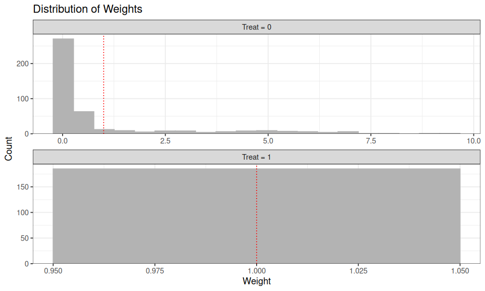

Matching and Weighting for Causal Inference#
Use the R kernel. Keep the supplied data/ folder beside this notebook. Run cells in order after installing the documented R environment. Data loading is entirely local.
Executive Summary#
This report compares exact matching, coarsened exact matching (CEM), and entropy balancing as design-stage tools for estimating an average treatment effect on the treated (ATT) from observational data.
The report anchors the observational estimates to the National Supported Work (NSW) experimental benchmark from
causaldata::nsw_mixtapewhile estimating the adjustment methods onMatchIt::lalonde, which replaces the NSW controls with a Panel Study of Income Dynamics (PSID) comparison sample.In the
lalondeworked example, all three adjusted designs produce a positive programme-effect estimate, but they do so with different tradeoffs in transparency, covariate balance, retained information, and agreement with the experimental benchmark.Exact matching is the most transparent design, but it remains a partial solution here because feasible exact constraints leave residual imbalance on prior earnings.
The report’s tuned CEM specification is the strongest matched-sample compromise: it brings all reported covariates below the conventional absolute standardized-difference threshold of
0.1, but it does so by pruning the treated sample from185units to81.Entropy balancing achieves the strongest observed mean balance and preserves all treated units, but the weighted comparison depends on a much smaller effective control sample, so the gain in balance comes with concentrated weights rather than explicit sample loss.
A credible adjusted design depends on more than using pre-treatment variables mechanically: the covariate set has to be justified from the treatment-assignment story so that confounders are targeted and colliders, mediators, or other bad controls are not smuggled into the design.
For evaluator practice, the main implication is that method choice should follow the causal question and the available overlap. In this example, entropy balancing is the strongest summary design when preserving the original treated population is the priority, while CEM is the clearest option when an auditable matched sample matters most.
Introduction#
This report examines three design-stage adjustment methods for causal inference using observational data: exact matching, which keeps only treated and untreated units that are identical on selected background variables; coarsened exact matching (CEM), which first groups variables into broader categories before matching; and entropy balancing, which reweights units so the groups align on selected covariate summaries. They are grouped together not because they are interchangeable, but because each forces the evaluator to answer the same design questions early: what causal effect is being targeted, which pre-treatment covariates[1] belong in the design, whether treated and untreated units overlap enough to be compared, and how much information is lost when comparability is improved.[2] (Ho et al. 2011). That makes them useful both as teaching devices and as practical stress tests of whether an observational comparison is defensible.
The methods should also be assessed critically rather than taught as a menu of equivalent options. Exact matching is highly transparent, but it often becomes unusable once the covariate set contains several variables or any meaningful granularity. CEM is usually more workable because it relaxes exact matching through binning, but the analyst’s coarsening choices can materially change who is retained and what “similarity” means. Entropy balancing can exactly balance the included covariate moments, but when overlap is limited the resulting weights may become highly variable and reduce effective sample size, so balance tables should be interpreted alongside overlap and weight-dispersion diagnostics.[3] (Hainmueller 2012; Ho et al. 2011). The point of comparing these methods is therefore to make those tradeoffs explicit, not to identify a universal best practice.
The report does not use propensity score matching as the main teaching example. That omission is deliberate. Propensity scores remain widely used, but in an introductory evaluation setting they can compress the design problem into a single modeled quantity[4] and can distract attention from whether specific covariates are actually balanced. For evaluator training, the selected methods better expose the relationship between covariate balance, sample retention, and the target population (Ho et al. 2011; Evaluation Task Force 2025b). A short extension on where propensity-score weighting fits is included in Appendix B: Propensity-Score Weighting Companion.
The report is written for an evaluation training context, with particular relevance for programme and policy evaluation in government. That framing matters. The Evaluation Task Force presents matching as one option within a wider quasi-experimental toolkit[5] that also includes difference-in-differences, regression discontinuity, synthetic control, and pre-post design[6] [7] (Evaluation Task Force 2025a, 2025b). A good methods report should therefore do more than explain how matching works; it should also explain when matching is the strongest available design, when it is a second-best compromise, and when it should be rejected in favour of a more credible alternative.
Relevance for Evaluation Practice#
In many applied evaluations, treatment assignment is shaped by need, geography, eligibility decisions, or self-selection rather than randomization. In those settings, matching and weighting methods can improve design transparency because they force the analyst to state what makes units comparable and to inspect whether that comparability is actually present on observed covariates that were determined before treatment, even when the evaluation itself is conducted retrospectively using post-intervention outcome data.[8] (Evaluation Task Force 2025a, 2025b). This is a genuine practical advantage over moving straight to an outcome model[9], because a regression can adjust for observed differences without first showing whether treated and untreated units were meaningfully comparable to begin with. Design-stage adjustment makes the comparison problem visible: it reveals whether balance can be achieved, how much sample is lost or reweighted to achieve it, and whether the remaining analytic sample still corresponds to the population the evaluation is supposed to inform. That does not remove the need for outcome modelling, but it does reduce the risk that a well-specified regression is treated as a substitute for checking whether a defensible comparison group exists at all.
But the practical value of these methods depends on using them skeptically. They help when the adjustment set captures the main observable drivers of selection and when the retained sample still corresponds to a policy-relevant population. They help far less when key confounders[10] are missing, when overlap is poor, or when a stronger quasi-experimental design is available. The aim of this report is therefore not to promote matching as a default solution, but to show evaluators how to use it as a disciplined design exercise and how to recognise when the data cannot support the causal question being asked.
Why Match: Reduce Model Dependence#
One of the clearest practical arguments for matching is that it can reduce model dependence[11] rather than merely improve a balance table. If treated and untreated units are badly mismatched in the raw data, the estimated treatment effect can depend heavily on functional-form choices, extrapolation across regions with weak support, and analyst discretion about interactions, nonlinearities, and trimming rules. In that setting, a regression may still return a coefficient, but the comparison underneath it is weak (Ho et al. 2007). Matching is useful because it can remove or down-weight the most implausible treated-control comparisons before the outcome model is fit, which makes the remaining estimate less hostage to arbitrary specification choices. This “reduce model dependence” argument is a particularly effective teaching bridge because it turns the motivation for matching into a problem of design quality rather than software preference (Heiss 2026).
Conceptual Bridge: Start With Subclassification#
Before thinking about algorithms, it helps to think in support cells. The simplest design question is: if the treated and untreated units are split into strata defined by pre-treatment covariates, do any cells contain both groups?
If yes, subclassification gives a direct within-cell comparison.
Exact matching applies that same logic to the raw covariate values.
CEM applies the same logic after replacing some raw values with broader, policy-legible bins.
For a benchmarked observational design closer to the NSW discussion in The Mixtape, see the NSW and CPS Benchmark Lab.
Design Principles#
Define the Estimand Before Adjustment#
Any adjustment strategy should begin with a clear statement of the target estimand[12] rather than with a preferred algorithm. In practice, that usually means deciding whether the analysis targets the average treatment effect (ATE), the average treatment effect on the treated (ATT), or the average treatment effect on the controls (ATC). This choice is not a technical afterthought. It affects which group is treated as focal, how weights are constructed, what kind of mismatch counts as a problem, and which population the final estimate describes (Ho et al. 2011).
This is also where many weak applications begin to drift (Ho et al. 2011). Analysts sometimes choose a method first and only later describe the target population. That reverses the logic of causal design. If the policy question concerns current participants, an ATT-oriented design may be appropriate; if it concerns a universal rollout, an ATE may matter more. Without that decision, apparently good balance can still be answering the wrong question.
As Cunningham emphasizes in The Mixtape teaching sequence, ATT and ATE answer different causal questions, and many observational designs identify effects for treated units more naturally than population-wide effects, so estimates should not be narrated as ATE without a defensible external-validity argument (Cunningham 2021a; Cunningham, Scott 2025).
Matching and Weighting as Design-Stage Tools#
Matching and weighting are best understood as design-stage tools for improving comparability before outcome analysis begins. Exact matching and CEM do this by restricting comparisons to units with the same or similar covariate profiles, while entropy balancing does so by reweighting units until selected features of the covariate distributions align (Huntington-Klein 2021; Hainmueller 2012). Keeping design and outcome analysis conceptually separate is useful because it reduces the temptation to keep tuning the design until the treatment effect looks convenient.
That said, design-stage adjustment should not be oversold. These methods can only balance observed covariates that have been measured well and included for defensible reasons. Matching and weighting often improve transparency more reliably than validity because they make the design assumptions and comparison group visible, but they cannot by themselves address unmeasured confounding[13], poor treatment definition, or weak overlap. A balanced design on the wrong covariates is still a weak design, and no software output can compensate for a poor causal story about how treatment was assigned.
Preprocess First, Estimate Second#
A useful shorthand for evaluator training is to separate the workflow into two stages: preprocessing and estimation (Heiss 2026). In preprocessing, the analyst defines the estimand, chooses defensible pre-treatment covariates, inspects raw imbalance and overlap, and then uses matching or weighting to redesign the comparison. In estimation, the analyst takes that redesigned sample or set of weights as given and estimates the treatment effect with methods that respect the design. This split matters because it discourages a common failure mode in observational work: adjusting the design repeatedly until the estimated effect looks appealing. It also clarifies that matching is not itself the estimand or the final model. It is the step that decides which comparisons the later model is allowed to summarize.
Post-Adjustment Inference Is Part of the Design#
Design-stage adjustment changes the sample, the weights, and often the effective amount of information left for estimation. Uncertainty therefore has to be handled as part of the adjusted design rather than as an afterthought. After matching, standard errors should reflect the structure of the retained comparison rather than treating the output as if it were an untouched simple random sample. After weighting, standard errors should account for the weighting procedure and the possibility that a small number of units carry disproportionate influence (Greifer 2025; Heiss 2026). In evaluator-facing work, the treatment effect should therefore be reported together with the uncertainty induced by the design, not just the point estimate and a balance table.
Balance and Precision Must Be Considered Together#
A successful design is not defined by covariate balance alone. Very small standardized mean differences[14] can coexist with heavy pruning[15], a very small effective sample size[16], or extreme weights that make estimates unstable. Better balance can therefore be purchased at the price of noisier estimates and a narrower target population (Ho et al. 2011; Hainmueller 2012).
For that reason, diagnostics should report at least four things together: covariate balance, overlap/common support[17], retained sample or effective sample size, and the implied target population. Treating any one of those metrics as sufficient is a methodological mistake.
Matching Within the Quasi-Experimental Toolkit#
Matching should be positioned as one option within a broader quasi-experimental toolkit rather than as the default solution for observational data. The Evaluation Academy materials place it alongside difference-in-differences, regression discontinuity, synthetic control, and pre-post approaches[18], each of which relies on different assumptions and data structures (Evaluation Task Force 2025b). In practice, the relevant question is not simply whether matching can be done, but whether it is the strongest defensible design available for the evaluation problem at hand.
That ranking matters because matching only addresses bias from observed differences between groups. If the data contain a credible threshold, a phased rollout, or repeated pre-treatment outcomes, other designs may offer stronger leverage against unobserved confounding. Matching is often most valuable when the assignment mechanism is messy but rich covariates determined before treatment are available; it is least valuable when the main threats to validity are precisely the things the data do not observe.
Causal Inference Background#
Potential Outcomes and Estimands#
The starting point for causal inference is the potential outcomes framework. For each unit, we imagine one outcome under treatment and another under no treatment[19]. The causal effect for that unit is the difference between those two potential outcomes. The central problem is that only one of them is ever observed, so the other is counterfactual[20] (Cunningham 2021a). All matching and weighting methods are attempts to build a more credible stand-in for that missing outcome.
This framework also makes the estimand explicit. ATE, ATT, and ATC are not interchangeable labels but answers to different policy questions. They refer to different target populations, imply different weighting or matching priorities, and can produce different substantive conclusions. A design-stage adjustment method is therefore only meaningful once the report has stated which estimand it is trying to recover (Cunningham 2021a; Ho et al. 2011).
Why Adjustment Is Needed#
In observational studies, treatment assignment is usually related to characteristics that also affect outcomes. Participants may seek out a programme because they are more motivated, administrators may target services toward higher-need cases, or policy exposure may vary systematically by place, timing, or institutional rules. If treated and untreated units differ in these pre-treatment characteristics, a raw outcome difference combines the effect of treatment with the effect of those pre-existing differences. That is the core confounding problem[21].
Adjustment is needed because the untreated group is rarely a credible stand-in for the treated group without further design work. Matching and weighting can make the comparison more defensible by aligning treated and untreated units on observed pre-treatment covariates, but that qualifier matters. They do nothing for important factors that were never measured, measured badly, or left out of the design. A well-balanced analysis on the wrong variables is still biased (Ho et al. 2007, 2011).
Core Assumptions#
For adjusted comparisons to support causal interpretation, several assumptions must be taken seriously:
Consistencymeans that the observed outcome under the treatment actually received corresponds to the relevant potential outcome. This requires treatment to be defined clearly enough that “receiving treatment” has a coherent substantive meaning (Cunningham 2021a). If one site delivers a light-touch service and another delivers an intensive intervention under the same label, the causal contrast is already blurred.Exchangeability, often framed as no unmeasured confounding[22], means that after conditioning on the selected pre-treatment covariates, treatment assignment is as good as independent of the potential outcomes. This is usually the hardest assumption and cannot be verified from balance tables alone (Cunningham 2021a).Positivity, or overlap[23], means that units with a given covariate profile must have a non-zero chance of appearing in each treatment condition. If some kinds of units appear only among the treated or only among the controls, no matching or weighting procedure can create a credible comparison for those cases (Ho et al. 2011).SUTVA (stable unit treatment value assumption)[24] is commonly used to refer to the requirement that one unit’s treatment status does not alter another unit’s outcome, and that there are not multiple hidden versions of treatment bundled into the same label. In evaluation settings, spillovers and displacement[25] or inconsistent programme delivery can threaten this assumption (Cunningham 2021a).
Taken together, these assumptions clarify what matching and weighting can and cannot do. They can improve comparability on observed covariates and make overlap problems visible, but they cannot rescue a design that lacks a defensible treatment definition, suffers from interference, or omits key confounders. A credible matching exercise therefore depends as much on substantive knowledge of the programme and assignment process as on statistical implementation.
From Unconfoundedness to a Control Strategy#
The practical problem is turning the abstract claim of unconfoundedness into a defensible control strategy. A useful bridge is the directed acyclic graph (DAG): a simplified causal map of how treatment assignment and outcomes are jointly generated. In the Mixtape teaching sequence, DAGs are used to make the backdoor problem concrete. A covariate belongs in the design when it helps block a non-causal backdoor path between treatment and outcome, not simply because it is available in the dataset (Cunningham 2021a). Framed that way, matching and weighting are not generic balancing routines. They are design tools that operationalize a prior causal story about which observed differences matter.
That bridge is helpful because it prevents a common mistake in applied evaluation: treating “all baseline variables” as automatically safe controls. Pre-treatment timing is necessary, but it is not sufficient. Some pre-treatment variables can still be colliders[26] or close proxies for selection mechanisms that should not be conditioned on mechanically. A DAG does not prove identification, but it does force the analyst to say which variables are meant to block confounding and which variables are being kept out because they would distort the comparison instead (Cunningham 2021a).
Choosing Covariates for Design#
For matching and weighting, the default target should be pre-treatment common causes of treatment assignment and the outcome, plus strong pre-treatment predictors of the untreated potential outcome when they improve precision without changing the causal story (Ho et al. 2011; Cunningham 2021a). In practice, that means the analyst should work outward from the assignment process: who got treated, why they got treated, what administrators, caseworkers, or participants knew at the time, and which observed characteristics plausibly shaped both programme take-up and later outcomes.
The same logic implies a clear exclusion rule. Variables changed by treatment should not be used in the design, because they are mediators or descendants of treatment rather than pre-treatment confounders. Nor is kitchen-sink adjustment automatically safer. Conditioning on a collider or other bad control can open a spurious path rather than close one, producing a design that looks statistically sophisticated but is causally less credible. The practical standard is therefore not “include everything observed”; it is “include the variables that make the treatment assignment story more credible and exclude variables that treatment could have changed or that would induce new bias if conditioned on” (Cunningham 2021a).
For a compact visual version of that rule, see Appendix A: DAG and Bad Controls Companion.
Subclassification as a Motivating Strategy#
One useful way to understand design-stage adjustment is through subclassification. The basic idea is to divide the data into strata[27] defined by pre-treatment covariates, compare treated and untreated outcomes within each stratum, and then aggregate those stratum-specific contrasts using appropriate weights (Cunningham 2021b). Within a stratum, treated and untreated units are more comparable because they share the same covariate pattern, or at least a more similar one than in the full unmatched sample.
This perspective is especially helpful for exact matching and CEM. Exact matching creates strata using the original covariate values and keeps only strata containing both treated and control units. CEM does the same after temporarily binning variables into broader, substantively meaningful categories. That framing is useful because it makes the design logic auditable: the evaluator is not asking software to find a hidden pattern, but to compare like with like under an explicit set of rules (Cunningham 2021b; Iacus, King, and Porro 2012).
The Curse of Dimensionality#
The main limitation of subclassification is that it becomes harder to implement as the number of covariates grows. Each additional covariate increases the number of possible strata, and with several continuous or finely coded variables the data quickly fragment into many sparse cells. In practice, evaluators then encounter strata with only treated units, only controls, or too few observations to support stable within-stratum comparisons (Cunningham 2021b).
This is the curse of dimensionality in design form. It weakens common support, increases sample loss, and can shift the target population away from the one originally intended. Exact matching is therefore most defensible when the adjustment set is limited, clearly justified, and measured at a level of detail that still leaves overlap. Coarsening can relieve the problem by collapsing continuous variables into broader bins, but that creates a visible tradeoff: coarser bins improve retention while allowing less precise similarity within strata. There is no purely technical way around that tradeoff; it has to be managed transparently (Iacus, King, and Porro 2012; Ho et al. 2011).
Matching Versus Weighting#
Matching and weighting pursue the same broad objective, but they do so in different ways. Matching changes the analytic sample by pairing or subclassifying units and often discarding observations that fall outside common support. Weighting keeps more of the original sample but alters the contribution each unit makes to the estimate so that the weighted covariate distribution in one group resembles that of another. In short, matching primarily restructures the sample, whereas weighting primarily restructures the estimating population.
That distinction matters for evaluation practice. Matching often provides a clearer audit trail because it makes sample restriction visible. Weighting can retain more units, but it can also obscure how much the estimate depends on a small number of heavily weighted observations. Entropy balancing belongs in the weighting family because it does not search for matched pairs or matched strata. Instead, it computes weights that satisfy explicit balance constraints on selected covariate moments[28] while staying as close as possible to a set of base weights (Hainmueller 2012). Its attraction is that balance is imposed directly rather than hoped for after an iterative search, but that advantage only holds if the resulting weights remain substantively and statistically credible.
Why This Report Does Not Lead With Propensity Scores#
Propensity-score methods are part of the matching and weighting toolkit, but this report does not treat them as the main entry point. The reason is pedagogic rather than doctrinal. In evaluator training, a single balancing score can make it too easy to discuss model fit or score overlap without ever becoming concrete about which baseline covariates matter, which treated units are being trimmed away, or how the target population is changing after adjustment (Ho et al. 2011).
That does not mean propensity-score methods are unimportant. They remain useful high-dimensional design tools, especially when direct matching on the full covariate vector is impractical. The point is narrower: for a first report that is trying to make design consequences legible, exact matching, CEM, and entropy balancing expose the balance-retention-overlap tradeoff more directly. Readers who want the propensity-score weighting extension can use Appendix B: Propensity-Score Weighting Companion, which anchors the discussion in The Effect’s weighting-first framing.
Positioning Matching Among QEDs#
Why Use Matching#
Matching is most useful when an evaluator needs to estimate a causal effect from observational data but does not have a design feature strong enough to support a more credible natural experiment[29]. In the Evaluation Academy framing, it is especially relevant when only post-intervention outcomes are available, when treatment was not randomly assigned, and when the analyst can observe a set of pre-treatment characteristics that are plausibly important to both treatment assignment and outcomes (Evaluation Task Force 2025b). In those settings, matching can make the comparison group more credible by reducing observed imbalance and forcing explicit decisions about overlap, sample retention, and the target population.
That makes matching a practical option for many programme and policy evaluations where administrative or survey data capture rich background characteristics but do not provide a clean before-and-after structure. It can also be valuable as a diagnostic exercise: a failed matching attempt is informative if it shows that no defensible comparison group exists in the available data. Even when the final analysis still uses an outcome model[30], the matched or weighted design can reduce model dependence[31] and make the basis for inference easier to explain (Ho et al. 2007; Evaluation Task Force 2025b).
When Not to Default to Matching#
Matching should not be presented as the default response to observational data. The relevant question is whether it is the strongest defensible design available, not whether it is technically feasible. If the assignment process creates a credible threshold, regression discontinuity may provide a stronger basis for causal inference. If a policy or programme begins at a known point in time and comparable pre-treatment outcome trends are available for treated and untreated groups, difference-in-differences may be preferable because it can account for stable unobserved differences between groups in a way matching on observed covariates cannot (Evaluation Task Force 2025b).
The same caution applies when treatment is poorly defined, interference is likely, selection depends heavily on unobserved judgement or motivation, or overlap is so weak that adjustment requires aggressive pruning or extreme weights. In those circumstances, producing a matched sample can create a false sense of design quality without solving the underlying identification problem. A good evaluator workflow therefore treats matching as one option in a broader quasi-experimental toolkit: useful when rich pre-treatment covariates are available and stronger designs are not, but secondary when the data support a more internally valid strategy (Evaluation Task Force 2025b).
Randomized Controlled Trials (RCTs) as a Benchmark, Not a Mythic Standard#
Randomized trials are still the most useful benchmark for thinking about comparability, but they should be treated as a rubric rather than as a magical “gold standard” that resolves every validity problem (Heiss 2026). A randomized controlled trial (RCT) helps break the link between treatment assignment and many pre-treatment confounders, which is why it remains the clearest baseline for what observational adjustment is trying to approximate. But randomized studies can still face attrition, noncompliance, weak measurement, and external-validity limits. This is a helpful corrective in matching pedagogy: the goal is not to imitate a mythologized experiment, but to ask which design gets us closest to a credible causal comparison under the actual constraints of the evaluation. Framed that way, matching becomes a second-best design repair tool relative to randomization, not an all-purpose substitute for it.
Data and Study Design#
Example Datasets#
For this worked example, the report uses two related datasets that play different roles. The observational design is estimated on lalonde, the demonstration dataset distributed with MatchIt, while the experimental benchmark comes from causaldata::nsw_mixtape. That distinction is important. causaldata::nsw_mixtape contains the NSW treated and randomized control groups only, whereas MatchIt::lalonde keeps the NSW treated group but pairs it with a non-experimental Panel Study of Income Dynamics (PSID) comparison sample (Ho et al. 2011).
The datasets also encode similar covariates differently. causaldata::nsw_mixtape stores race and ethnicity as separate black and hisp indicators and uses marr for marital status. MatchIt::lalonde collapses race into a single race factor and uses married. In the code below, the report standardizes those differences enough to discuss the datasets side by side while still fitting the matching and weighting designs on the MatchIt sample that the rest of the report has been using.
In this application:
the benchmark dataset is
causaldata::nsw_mixtapethe observational dataset is
MatchIt::lalondetreatindicates participation in the training programmere78is 1978 earnings and serves as the post-treatment outcomethe pre-treatment covariates are
age,educ,race,married,nodegree,re74, andre75the target estimand is the ATT
the focal group is the treated sample, that is, units with
treat = 1
This is a useful teaching setup because it mirrors a common evaluator problem: a programme has already been delivered, a comparison group exists in the data, but the comparison is not credible without careful design work on observed pre-treatment characteristics. Keeping the NSW experiment in view at the same time makes it possible to judge the observational estimates against a known benchmark rather than only against one another.
Evaluation Use Case#
Substantively, the example can be read as a retrospective employment-programme evaluation. The causal question is whether participation in the training programme increased later earnings for the people who actually enrolled. That makes the ATT the natural starting estimand, because the policy-relevant contrast is the earnings those participants observed in 1978 versus the earnings they would plausibly have had without the programme.
The covariate set is also instructive for evaluator practice. Demographic variables such as age, education, and race are combined with marital status, degree completion, and two lagged earnings measures (re74 and re75) that proxy prior labour-market attachment and earnings potential. In a real evaluation, the equivalent task would be to identify pre-treatment variables that are plausibly related both to programme take-up and to later outcomes.
Design-Side Covariate Audit#
For this worked example, the design covariates are justified as pre-treatment predictors of programme selection and later earnings, not simply as all available columns in the dataset.
age,educ,race,married, andnodegreeare treated as background characteristics that may shape both programme participation and labour-market outcomes.re74andre75are especially important because they proxy prior earnings capacity and labour-market attachment, which are likely to matter for both enrolment and post-programme earnings.re78is excluded from the design because it is the post-treatment outcome, not a baseline covariate.The broader design rule is to exclude variables that could have been changed by treatment or that would only be observed after selection into the programme.
Package Setup#
options(repr.plot.width = 8, repr.plot.height = 4.8)
# Declare analysis dependencies used across matching, weighting, and diagnostics.
required_packages <- c(
"MatchIt",
"WeightIt",
"cobalt",
"causaldata",
"dagitty",
"dplyr",
"ggdag",
"ggplot2",
"knitr"
)
# Identify packages that are not yet available in the current R library.
missing_packages <- required_packages[!vapply(
required_packages,
requireNamespace,
logical(1),
quietly = TRUE
)]
# Install only the missing packages to keep setup idempotent.
if (length(missing_packages) > 0) {
stop(
"Install the documented R environment first; missing: ",
paste(missing_packages, collapse = ", "),
call. = FALSE
)
}
# Attach packages for use in the remainder of the report.
invisible(lapply(required_packages, library, character.only = TRUE))
data_helpers <- c("data/load-data.R", "../data/load-data.R", "docs/labs/data/load-data.R")
data_helpers <- data_helpers[file.exists(data_helpers)]
if (!length(data_helpers)) stop("Keep the bundled data folder beside the notebook.")
source(data_helpers[[1]])
cobalt (Version 4.6.2, Build Date: 2026-01-29)
Attaching package: ‘cobalt’
The following object is masked from ‘package:MatchIt’:
lalonde
Attaching package: ‘dplyr’
The following objects are masked from ‘package:stats’:
filter, lag
The following objects are masked from ‘package:base’:
intersect, setdiff, setequal, union
Attaching package: ‘ggdag’
The following object is masked from ‘package:stats’:
filter
Data Preparation#
options(repr.plot.width = 8, repr.plot.height = 4.8)
# Load the checksummed local copies of the NSW benchmark and observational sample.
lalonde <- qed_data("lalonde")
nsw_mixtape <- qed_data("nsw_mixtape")
# Standardize the NSW experiment while retaining its original package columns.
benchmark_dat <- nsw_mixtape |>
mutate(
treat = as.integer(treat),
outcome = re78,
race = factor(
case_when(
black == 1L ~ "black",
hisp == 1L ~ "hispan",
TRUE ~ "white"
),
levels = c("black", "hispan", "white")
),
married = factor(marr, levels = c(0, 1), labels = c("not_married", "married")),
nodegree = factor(nodegree, levels = c(0, 1), labels = c("has_degree", "no_degree"))
)
# Standardize the MatchIt observational sample used for the adjustment methods.
dat <- lalonde |>
mutate(
treat = as.integer(treat),
outcome = re78,
married = factor(married, levels = c(0, 1), labels = c("not_married", "married")),
nodegree = factor(nodegree, levels = c(0, 1), labels = c("has_degree", "no_degree"))
)
# Store the adjustment set in one place for reusable reporting and checks.
design_covariates <- c(
"age", "educ", "race", "married", "nodegree", "re74", "re75"
)
# Summarize how the two package datasets are being used in this report.
dataset_roles <- tibble(
dataset = c("causaldata::nsw_mixtape", "MatchIt::lalonde"),
role_in_report = c("Experimental benchmark", "Observational design sample"),
treated_units = c(sum(benchmark_dat$treat == 1L), sum(dat$treat == 1L)),
control_units = c(sum(benchmark_dat$treat == 0L), sum(dat$treat == 0L)),
control_group = c("NSW randomized controls", "PSID comparison sample"),
covariate_coding = c("black/hisp + marr", "race factor + married")
)
dataset_roles |>
rename(
Dataset = dataset,
Role = role_in_report,
`Treated units` = treated_units,
`Control units` = control_units,
`Control group` = control_group,
`Covariate coding` = covariate_coding
) |>
knitr::kable(caption = "Dataset roles in the worked example.")
# Quick schema check for treatment, outcome, and all design covariates.
dat |>
select(treat, outcome, all_of(design_covariates)) |>
glimpse()
Table: Dataset roles in the worked example.
|Dataset |Role | Treated units| Control units|Control group |Covariate coding |
|:-----------------------|:---------------------------|-------------:|-------------:|:-----------------------|:---------------------|
|causaldata::nsw_mixtape |Experimental benchmark | 185| 260|NSW randomized controls |black/hisp + marr |
|MatchIt::lalonde |Observational design sample | 185| 429|PSID comparison sample |race factor + married |
Rows: 614
Columns: 9
$ treat <int> 1, 1, 1, 1, 1, 1, 1, 1, 1, 1, 1, 1, 1, 1, 1, 1, 1, 1, 1, 1, 1…
$ outcome <dbl> 9930.0460, 3595.8940, 24909.4500, 7506.1460, 289.7899, 4056.4…
$ age <int> 37, 22, 30, 27, 33, 22, 23, 32, 22, 33, 19, 21, 18, 27, 17, 1…
$ educ <int> 11, 9, 12, 11, 8, 9, 12, 11, 16, 12, 9, 13, 8, 10, 7, 10, 13,…
$ race <fct> black, hispan, black, black, black, black, black, black, blac…
$ married <fct> married, not_married, not_married, not_married, not_married, …
$ nodegree <fct> no_degree, no_degree, has_degree, no_degree, no_degree, no_de…
$ re74 <dbl> 0, 0, 0, 0, 0, 0, 0, 0, 0, 0, 0, 0, 0, 0, 0, 0, 0, 0, 0, 0, 0…
$ re75 <dbl> 0, 0, 0, 0, 0, 0, 0, 0, 0, 0, 0, 0, 0, 0, 0, 0, 0, 0, 0, 0, 0…
The dataset-role table is not a technical footnote. It explains why the benchmark and the observational design should not be collapsed into one object. The experimental effect must be estimated using only NSW treated units and NSW randomized controls in causaldata::nsw_mixtape. The matching and weighting designs below instead use MatchIt::lalonde, where the same treated sample is compared against a PSID control pool.
Experimental Benchmark#
options(repr.plot.width = 8, repr.plot.height = 4.8)
# Estimate the NSW experimental benchmark using treated and randomized controls only.
benchmark_fit <- lm(outcome ~ treat, data = benchmark_dat)
benchmark_att <- coef(summary(benchmark_fit))["treat", ]
experimental_estimate <- unname(benchmark_att["Estimate"])
# Summarize the randomized treated and control groups for later comparison.
benchmark_summary <- benchmark_dat |>
group_by(treat) |>
summarise(
n = n(),
mean_re78 = mean(outcome, na.rm = TRUE),
mean_re74 = mean(re74, na.rm = TRUE),
mean_re75 = mean(re75, na.rm = TRUE),
.groups = "drop"
) |>
mutate(group = if_else(treat == 1L, "NSW treated", "NSW controls")) |>
select(group, n, mean_re78, mean_re74, mean_re75) |>
mutate(across(-c(group, n), ~ round(.x, 3)))
benchmark_effect <- tibble(
design = "Experimental benchmark (NSW RCT)",
estimate = unname(benchmark_att["Estimate"]),
std_error = unname(benchmark_att["Std. Error"]),
t_value = unname(benchmark_att["t value"]),
p_value = unname(benchmark_att["Pr(>|t|)"])
) |>
mutate(across(c(estimate, std_error, t_value, p_value), ~ round(.x, 3)))
benchmark_summary |>
rename(
Group = group,
N = n,
`Mean outcome (re78)` = mean_re78,
`Mean re74` = mean_re74,
`Mean re75` = mean_re75
) |>
knitr::kable(caption = "Randomized benchmark group summaries.")
benchmark_effect |>
rename(
Design = design,
Estimate = estimate,
`Std. error` = std_error,
`t value` = t_value,
`P-value` = p_value
) |>
knitr::kable(caption = "Experimental benchmark estimate from the NSW randomized comparison.")
Table: Randomized benchmark group summaries.
|Group | N| Mean outcome (re78)| Mean re74| Mean re75|
|:------------|---:|-------------------:|---------:|---------:|
|NSW controls | 260| 4554.801| 2107.027| 1266.909|
|NSW treated | 185| 6349.144| 2095.574| 1532.055|
Table: Experimental benchmark estimate from the NSW randomized comparison.
|Design | Estimate| Std. error| t value| P-value|
|:--------------------------------|--------:|----------:|-------:|-------:|
|Experimental benchmark (NSW RCT) | 1794.342| 632.853| 2.835| 0.005|
The benchmark estimate is positive: the randomized NSW contrast in causaldata::nsw_mixtape implies an earnings gain of about 1794.342 dollars, with standard error 632.853. This is the reference point for the rest of the report. It is not estimated with the PSID controls from MatchIt::lalonde; it comes only from the NSW experiment.
That benchmark also clarifies what the observational design is trying to do. MatchIt::lalonde keeps the same 185 treated NSW participants, but it replaces the 260 NSW experimental controls with 429 PSID controls. The matching and weighting sections therefore ask a narrower and harder question than the experimental benchmark: whether an observational comparison built from the PSID sample can recover something close to the randomized NSW result after design adjustment.
Pre-Match Diagnostics#
Descriptive Comparison#
The first step is to inspect the raw treated and untreated groups before any adjustment is attempted. This descriptive comparison does not by itself establish whether the design is usable, but it does show whether the untreated group looks remotely plausible as a stand-in for the treated group. In the lalonde data, that initial comparison already suggests a problem: the groups differ on several pre-treatment characteristics that are closely related to later earnings, especially marital status, race, and prior labour-market attachment (Ho et al. 2007, 2011).
options(repr.plot.width = 8, repr.plot.height = 4.8)
# Summarize baseline group differences before any adjustment is applied.
pre_match_summary <- dat |>
group_by(treat) |>
summarise(
n = n(),
mean_outcome = mean(outcome, na.rm = TRUE),
mean_age = mean(age, na.rm = TRUE),
mean_educ = mean(educ, na.rm = TRUE),
prop_married = mean(married == "married", na.rm = TRUE),
prop_no_degree = mean(nodegree == "no_degree", na.rm = TRUE),
mean_re74 = mean(re74, na.rm = TRUE),
mean_re75 = mean(re75, na.rm = TRUE),
.groups = "drop"
) |>
mutate(group = if_else(treat == 1L, "Treated", "Control")) |>
select(
group, n, mean_outcome, mean_age, mean_educ,
prop_married, prop_no_degree, mean_re74, mean_re75
) |>
mutate(across(-c(group, n), ~ round(.x, 3)))
pre_match_summary |>
rename(
Group = group,
N = n,
`Mean outcome` = mean_outcome,
`Mean age` = mean_age,
`Mean education` = mean_educ,
`Share married` = prop_married,
`Share no degree` = prop_no_degree,
`Mean re74` = mean_re74,
`Mean re75` = mean_re75
) |>
knitr::kable(caption = "Pre-adjustment descriptive comparison for treated and control groups.")
Table: Pre-adjustment descriptive comparison for treated and control groups.
|Group | N| Mean outcome| Mean age| Mean education| Share married| Share no degree| Mean re74| Mean re75|
|:-------|---:|------------:|--------:|--------------:|-------------:|---------------:|---------:|---------:|
|Control | 429| 6984.170| 28.030| 10.235| 0.513| 0.597| 5619.237| 2466.484|
|Treated | 185| 6349.144| 25.816| 10.346| 0.189| 0.708| 2095.574| 1532.055|
The descriptive table is useful because it makes the substantive differences easy to see. The treated sample is younger on average, much less likely to be married, somewhat more likely to lack a degree, and has substantially lower earnings in both 1974 and 1975. Those are not minor baseline differences; they suggest that the untreated group is not yet a credible counterfactual for the treated group. Relative to the NSW experimental controls, the PSID controls in MatchIt::lalonde also begin from a much stronger earnings history: mean re74 is 5619.237 in the observational sample versus 2107.027 in the randomized NSW controls, and mean re75 is 2466.484 versus 1266.909. That is exactly why keeping the experimental benchmark visible is useful. The next step is therefore to move from raw descriptives to formal balance diagnostics on a common scale.
Balance Diagnostics Before Adjustment#
MatchIt can be used with method = NULL to create a design object without yet changing the sample. That is useful because it creates a baseline against which the later exact matching, CEM, and entropy balancing results can be judged (Ho et al. 2011). The companion argument un = TRUE means “show the unadjusted balance”, so the diagnostics reported here describe the raw sample rather than a matched or weighted version of it. Later in the report, the same functions will be able to display both unadjusted and adjusted balance, making it easier to see whether the design has genuinely improved.
options(repr.plot.width = 8, repr.plot.height = 4.8)
# Build an unadjusted MatchIt object as the baseline design benchmark.
m_out0 <- matchit(
treat ~ age + educ + race + married + nodegree + re74 + re75,
data = dat,
method = NULL,
estimand = "ATT"
)
# Helper: render MatchIt summary components as markdown tables.
render_matchit_component <- function(component, caption, row_label = "Covariate", digits = 3) {
if (is.null(component)) {
return(invisible(NULL))
}
as.data.frame(component) |>
tibble::rownames_to_column(row_label) |>
mutate(across(where(is.numeric), ~ round(.x, digits))) |>
knitr::kable(caption = caption)
}
m_out0_summary <- summary(m_out0, un = TRUE)
render_matchit_component(
m_out0_summary$sum.all,
caption = "MatchIt baseline balance summary (unadjusted)."
)
render_matchit_component(
m_out0_summary$nn,
caption = "MatchIt baseline sample sizes.",
row_label = "Sample"
)
Table: MatchIt baseline balance summary (unadjusted).
|Covariate | Means Treated| Means Control| Std. Mean Diff.| Var. Ratio| eCDF Mean| eCDF Max| Std. Pair Dist.|
|:------------------|-------------:|-------------:|---------------:|----------:|---------:|--------:|---------------:|
|distance | 0.577| 0.182| 1.794| 0.921| 0.378| 0.644| NA|
|age | 25.816| 28.030| -0.309| 0.440| 0.081| 0.158| NA|
|educ | 10.346| 10.235| 0.055| 0.496| 0.035| 0.111| NA|
|raceblack | 0.843| 0.203| 1.762| NA| 0.640| 0.640| NA|
|racehispan | 0.059| 0.142| -0.350| NA| 0.083| 0.083| NA|
|racewhite | 0.097| 0.655| -1.882| NA| 0.558| 0.558| NA|
|marriednot_married | 0.811| 0.487| 0.826| NA| 0.324| 0.324| NA|
|marriedmarried | 0.189| 0.513| -0.826| NA| 0.324| 0.324| NA|
|nodegreehas_degree | 0.292| 0.403| -0.245| NA| 0.111| 0.111| NA|
|nodegreeno_degree | 0.708| 0.597| 0.245| NA| 0.111| 0.111| NA|
|re74 | 2095.574| 5619.237| -0.721| 0.518| 0.225| 0.447| NA|
|re75 | 1532.055| 2466.484| -0.290| 0.956| 0.134| 0.288| NA|
Table: MatchIt baseline sample sizes.
|Sample | Control| Treated|
|:-------------|-------:|-------:|
|All (ESS) | 429| 185|
|All | 429| 185|
|Matched (ESS) | 429| 185|
|Matched | 429| 185|
|Unmatched | 0| 0|
|Discarded | 0| 0|
The summary(m_out0, un = TRUE) output gives a detailed baseline diagnostic. The main columns are:
Means Treatedis the sample mean for treated units.Means Controlis the sample mean for untreated units.Std. Mean Diff.is the standardized mean difference, the main balance statistic. Values close to zero indicate better balance, while larger absolute values indicate greater treated-control separation.Var. Ratiois the treated-group variance divided by the control-group variance for continuous covariates. Values near1are generally preferable.eCDF MeanandeCDF Maxcompare the full empirical distributions of a variable rather than just their means. Larger values indicate that the treated and control distributions differ more strongly.
For binary indicators, the reported means are proportions rather than arithmetic means. So if Means Treated for marriedmarried is about 0.19, that means roughly 19 percent of the treated group is married. The Sample Sizes block reports how many units are in the data before and after adjustment; because this object is still unadjusted, all units remain in the sample. This output is helpful when a reader wants the full set of balance statistics for each covariate.
options(repr.plot.width = 8, repr.plot.height = 4.8)
# Produce a compact cobalt balance table for unadjusted diagnostics.
unadjusted_balance <- bal.tab(
m_out0,
un = TRUE,
binary = "std",
disp.v.ratio = TRUE,
m.threshold = 0.1
)
unadjusted_balance$Balance |>
as.data.frame() |>
tibble::rownames_to_column("Covariate") |>
mutate(across(where(is.numeric), ~ round(.x, 3))) |>
select(any_of(c("Covariate", "Type", "Diff.Un", "V.Ratio.Un", "M.Threshold.Un"))) |>
rename(any_of(c(
`Std. mean diff. (unadjusted)` = "Diff.Un",
`Variance ratio (unadjusted)` = "V.Ratio.Un",
`Threshold check` = "M.Threshold.Un"
))) |>
knitr::kable(caption = "Compact unadjusted balance audit from cobalt.")
Table: Compact unadjusted balance audit from cobalt.
|Covariate |Type | Std. mean diff. (unadjusted)| Variance ratio (unadjusted)|Threshold check |
|:------------------|:--------|----------------------------:|---------------------------:|:------------------|
|distance |Distance | 1.794| 0.921| |
|age |Contin. | -0.309| 0.440|Not Balanced, >0.1 |
|educ |Contin. | 0.055| 0.496|Balanced, <0.1 |
|race_black |Binary | 1.762| NA|Not Balanced, >0.1 |
|race_hispan |Binary | -0.350| NA|Not Balanced, >0.1 |
|race_white |Binary | -1.882| NA|Not Balanced, >0.1 |
|married_married |Binary | -0.826| NA|Not Balanced, >0.1 |
|nodegree_no_degree |Binary | 0.245| NA|Not Balanced, >0.1 |
|re74 |Contin. | -0.721| 0.518|Not Balanced, >0.1 |
|re75 |Contin. | -0.290| 0.956|Not Balanced, >0.1 |
The bal.tab() output from cobalt presents the same underlying idea in a more compact format that is often easier to scan:
Typeidentifies whether the variable is continuous, binary, or the estimated distance measure.Diff.Unis the unadjusted standardized mean difference. This plays the same role asStd. Mean Diff.in thesummary()output.V.Ratio.Unis the unadjusted variance ratio for continuous variables.M.Threshold.Unshows whether the absolute unadjusted mean difference passes the threshold supplied tobal.tab(). In this report, a threshold of0.1is used as a rough rule of thumb, so entries markedNot Balanced, >0.1remain meaningfully imbalanced before adjustment.
This table is especially useful for a quick audit. It makes clear that most included covariates exceed the chosen imbalance threshold before any design work is done.
options(repr.plot.width = 8, repr.plot.height = 5.5)
# Visualize absolute standardized differences against the 0.1 threshold.
love.plot(
m_out0,
stats = "mean.diffs",
abs = TRUE,
binary = "std",
thresholds = c(m = 0.1),
var.order = "unadjusted"
)

The love plot turns the same information into a single visual diagnostic. Each point is the absolute standardized mean difference for one covariate, so points farther to the right indicate worse imbalance and points closer to zero indicate better balance. The vertical reference line at 0.1 is the same rule-of-thumb threshold used in the balance table: covariates to the left of that line are closer to acceptable balance, while those to the right still need work.
Taken together, the descriptive table, the summary() output, the bal.tab() audit, and the love plot all point to the same conclusion. The unadjusted sample is badly imbalanced, especially on race, marital status, and prior earnings, while education is the only included covariate that is close to balanced at baseline. That is exactly the situation in which design-stage adjustment is needed. The next sections therefore ask whether exact matching, coarsened exact matching, or entropy balancing can reduce those imbalances enough to support a more credible ATT analysis.
Exact Matching#
Method Overview#
Exact matching groups units into strata that are identical on the selected covariates and only compares treated and control units within those strata (Ho et al. 2011). Its main attraction is transparency: the analyst can say exactly which characteristics must line up before a comparison is allowed. Its main limitation is feasibility. When the covariate set includes several variables, especially continuous ones, the data quickly fragment into many sparse cells and units without exact counterparts are lost.
That tradeoff is visible in the lalonde example. Exact matching on the full design set would be too restrictive because continuous prior earnings would create many unique covariate profiles. For that reason, this worked example uses exact matching on a smaller set of substantively central and mostly discrete covariates: race, married, nodegree, and educ. The remaining pre-treatment variables, especially age and lagged earnings, are then treated as diagnostics rather than exact constraints. This is a realistic evaluator workflow: exact matching can be useful, but only if the analyst is explicit about which covariates are being matched exactly and which are merely being checked afterward.
R Implementation with MatchIt#
options(repr.plot.width = 8, repr.plot.height = 4.8)
# Fit exact matching on a reduced discrete covariate set.
m_exact <- matchit(
treat ~ race + married + nodegree + educ,
data = dat,
method = "exact",
estimand = "ATT"
)
matched_exact <- match.data(m_exact)
# Report sample retention and subclass count after exact matching.
exact_retention <- tibble(
metric = c(
"Treated units in full sample",
"Treated units retained",
"Control units in full sample",
"Control units retained",
"Matched subclasses"
),
value = c(
sum(dat$treat == 1),
sum(matched_exact$treat == 1),
sum(dat$treat == 0),
sum(matched_exact$treat == 0),
n_distinct(matched_exact$subclass)
)
)
exact_retention |>
rename(
Metric = metric,
Value = value
) |>
knitr::kable(caption = "Exact-matching sample retention and subclass count.")
Table: Exact-matching sample retention and subclass count.
|Metric | Value|
|:----------------------------|-----:|
|Treated units in full sample | 185|
|Treated units retained | 183|
|Control units in full sample | 429|
|Control units retained | 284|
|Matched subclasses | 35|
This specification retains most treated cases while making the exact constraints auditable. In this run, 183 of the 185 treated units are retained, along with 284 controls, spread across 35 exact-match subclasses. That is a relatively favourable result for exact matching, but it still illustrates an important point: even a modest increase in the number or granularity of matched covariates can sharply reduce overlap and sample retention.
Post-Match Diagnostics#
The first diagnostic below shows what exact matching does to the covariates that were explicitly included in the match. The second diagnostic uses cobalt to check both the exact-matched covariates and the omitted pre-treatment covariates age, re74, and re75, which matter substantively even though they were not part of the exact constraints.
options(repr.plot.width = 8, repr.plot.height = 4.8)
# Full MatchIt diagnostic for exact matching.
exact_summary <- summary(m_exact, un = TRUE)
render_matchit_component(
exact_summary$sum.all,
caption = "Exact matching: pre-adjustment balance summary."
)
render_matchit_component(
exact_summary$sum.matched,
caption = "Exact matching: post-adjustment balance summary."
)
render_matchit_component(
exact_summary$nn,
caption = "Exact matching: sample sizes before and after matching.",
row_label = "Sample"
)
Table: Exact matching: pre-adjustment balance summary.
|Covariate | Means Treated| Means Control| Std. Mean Diff.| Var. Ratio| eCDF Mean| eCDF Max| Std. Pair Dist.|
|:------------------|-------------:|-------------:|---------------:|----------:|---------:|--------:|---------------:|
|raceblack | 0.843| 0.203| 1.762| NA| 0.640| 0.640| NA|
|racehispan | 0.059| 0.142| -0.350| NA| 0.083| 0.083| NA|
|racewhite | 0.097| 0.655| -1.882| NA| 0.558| 0.558| NA|
|marriednot_married | 0.811| 0.487| 0.826| NA| 0.324| 0.324| NA|
|marriedmarried | 0.189| 0.513| -0.826| NA| 0.324| 0.324| NA|
|nodegreehas_degree | 0.292| 0.403| -0.245| NA| 0.111| 0.111| NA|
|nodegreeno_degree | 0.708| 0.597| 0.245| NA| 0.111| 0.111| NA|
|educ | 10.346| 10.235| 0.055| 0.496| 0.035| 0.111| NA|
Table: Exact matching: post-adjustment balance summary.
|Covariate | Means Treated| Means Control| Std. Mean Diff.| Var. Ratio| eCDF Mean| eCDF Max| Std. Pair Dist.|
|:------------------|-------------:|-------------:|---------------:|----------:|---------:|--------:|---------------:|
|raceblack | 0.842| 0.842| 0| NA| 0| 0| 0|
|racehispan | 0.060| 0.060| 0| NA| 0| 0| 0|
|racewhite | 0.098| 0.098| 0| NA| 0| 0| 0|
|marriednot_married | 0.814| 0.814| 0| NA| 0| 0| 0|
|marriedmarried | 0.186| 0.186| 0| NA| 0| 0| 0|
|nodegreehas_degree | 0.290| 0.290| 0| NA| 0| 0| 0|
|nodegreeno_degree | 0.710| 0.710| 0| NA| 0| 0| 0|
|educ | 10.355| 10.355| 0| 0.994| 0| 0| 0|
Table: Exact matching: sample sizes before and after matching.
|Sample | Control| Treated|
|:-------------|-------:|-------:|
|All (ESS) | 429.000| 185|
|All | 429.000| 185|
|Matched (ESS) | 91.225| 183|
|Matched | 284.000| 183|
|Unmatched | 145.000| 2|
|Discarded | 0.000| 0|
options(repr.plot.width = 8, repr.plot.height = 4.8)
# Evaluate exact-match balance, including omitted continuous diagnostics.
exact_balance <- bal.tab(
m_exact,
data = dat,
un = TRUE,
binary = "std",
disp.v.ratio = TRUE,
m.threshold = 0.1,
addl = ~ age + re74 + re75
)
exact_balance$Balance |>
as.data.frame() |>
tibble::rownames_to_column("Covariate") |>
mutate(across(where(is.numeric), ~ round(.x, 3))) |>
select(any_of(c("Covariate", "Type", "Diff.Un", "Diff.Adj", "V.Ratio.Un", "V.Ratio.Adj", "M.Threshold.Adj"))) |>
rename(any_of(c(
`Std. mean diff. (unadjusted)` = "Diff.Un",
`Std. mean diff. (adjusted)` = "Diff.Adj",
`Variance ratio (unadjusted)` = "V.Ratio.Un",
`Variance ratio (adjusted)` = "V.Ratio.Adj",
`Threshold check (adjusted)` = "M.Threshold.Adj"
))) |>
knitr::kable(caption = "Exact-matching balance diagnostics, including added continuous covariates.")
Table: Exact-matching balance diagnostics, including added continuous covariates.
|Covariate |Type | Std. mean diff. (unadjusted)| Std. mean diff. (adjusted)| Variance ratio (unadjusted)| Variance ratio (adjusted)|
|:------------------|:-------|----------------------------:|--------------------------:|---------------------------:|-------------------------:|
|race_black |Binary | 1.762| 0.000| NA| NA|
|race_hispan |Binary | -0.350| 0.000| NA| NA|
|race_white |Binary | -1.882| 0.000| NA| NA|
|married_married |Binary | -0.826| 0.000| NA| NA|
|nodegree_no_degree |Binary | 0.245| 0.000| NA| NA|
|educ |Contin. | 0.055| 0.000| 0.496| 0.994|
|age |Contin. | -0.309| 0.055| 0.440| 0.416|
|re74 |Contin. | -0.721| -0.130| 0.518| 0.959|
|re75 |Contin. | -0.290| 0.009| 0.956| 1.411|
options(repr.plot.width = 8, repr.plot.height = 5.5)
# Plot exact-match imbalance before and after adjustment.
love.plot(
m_exact,
data = dat,
stats = "mean.diffs",
abs = TRUE,
binary = "std",
thresholds = c(m = 0.1),
var.order = "unadjusted",
addl = ~ age + re74 + re75
)
{kind=link}
The diagnostics show the defining strength and weakness of exact matching. The included covariates are balanced exactly by construction: their matched standardized mean differences are zero. Balance also improves on age and re75, even though those variables were not included directly in the match. But re74 remains above the 0.1 rule-of-thumb threshold after matching, which is a reminder that exact matching only guarantees balance on the variables used to define the strata. If important continuous predictors are omitted from those constraints, they can remain meaningfully imbalanced even after a seemingly successful exact match.
Effect Estimation After Exact Matching#
options(repr.plot.width = 8, repr.plot.height = 4.8)
# Estimate the ATT using match weights from the exact-matched sample.
fit_exact <- lm(outcome ~ treat, data = matched_exact, weights = weights)
# Extract and format the treatment effect for the summary table.
exact_effect <- {
exact_coef <- coef(summary(fit_exact))["treat", ]
tibble(
method = "Exact matching",
estimate = unname(exact_coef["Estimate"]),
std_error = unname(exact_coef["Std. Error"]),
p_value = unname(exact_coef["Pr(>|t|)"])
)
} |>
mutate(across(c(estimate, std_error, p_value), ~ round(.x, 3)))
exact_effect |>
rename(
Method = method,
Estimate = estimate,
`Std. error` = std_error,
`P-value` = p_value
) |>
knitr::kable(caption = "Exact-matching treatment-effect estimate.")
Table: Exact-matching treatment-effect estimate.
|Method | Estimate| Std. error| P-value|
|:--------------|--------:|----------:|-------:|
|Exact matching | 717.44| 667.997| 0.283|
The outcome model is estimated in the matched sample using the matching weights returned by MatchIt. In this example, exact matching produces an estimated positive ATT, but the estimate is imprecise. That is not surprising. Exact matching has improved transparency and removed imbalance on the constrained covariates, but it has also narrowed the comparison to a subset of the original sample and left at least one substantively important prior-earnings measure (re74) imperfectly balanced. The next section therefore turns to coarsened exact matching, which is designed to retain the subclassification logic while making the design more flexible for mixed and continuous covariates.
Coarsened Exact Matching#
Method Overview#
Coarsened exact matching (CEM) keeps the subclassification logic of exact matching but makes it workable for mixed and continuous covariates by temporarily binning them into broader categories before matching (Iacus, King, and Porro 2012; Ho et al. 2011). Instead of requiring treated and control units to be identical on raw age or raw prior earnings, the analyst requires them to fall into the same substantively chosen ranges. That relaxes the rigidity of exact matching while preserving its main design virtue: the rules that define comparability remain visible and auditable.
This is especially useful in the lalonde example because the exact-matching section showed the core problem already. Exact matching produced a transparent design, but it could only do so by matching exactly on a reduced set of mostly discrete covariates and treating age and prior earnings as post-hoc diagnostics. CEM provides a middle ground. It keeps those continuous covariates inside the design itself, but it does so at a level of granularity that still leaves treated and control units in overlapping subclasses.
The practical question is therefore not whether to coarsen, but how aggressively. If the bins are too fine, the design collapses back toward infeasible exact matching and many treated units are lost. If they are too coarse, the matched sample is larger but comparability within subclasses becomes weaker. The workflow below treats the default MatchIt coarsening as a baseline, then compares it with a custom specification that uses documented cutpoints choices: a fixed number of bins for educ and quantile-based bins for age, re74, and re75. That makes the final specification interpretable as a design decision rather than a black-box search routine.
R Implementation with MatchIt#
options(repr.plot.width = 8, repr.plot.height = 4.8)
# Baseline CEM using MatchIt's default coarsening rules.
m_cem_default <- matchit(
treat ~ age + educ + race + married + nodegree + re74 + re75,
data = dat,
method = "cem",
estimand = "ATT"
)
# Materialize the retained matched sample for summary counts.
matched_cem_default <- match.data(m_cem_default)
# Custom coarsening that relaxes the default enough to retain more treated units.
cem_cutpoints <- list(
age = "q5",
educ = 4,
re74 = "q4",
re75 = "q4"
)
# Refit CEM with analyst-specified bins for key numeric covariates.
m_cem <- matchit(
treat ~ age + educ + race + married + nodegree + re74 + re75,
data = dat,
method = "cem",
estimand = "ATT",
cutpoints = cem_cutpoints
)
# Extract the final CEM-adjusted sample used later for estimation.
matched_cem <- match.data(m_cem)
# Compute balance diagnostics for the default and custom specifications.
cem_default_balance <- bal.tab(
m_cem_default,
un = TRUE,
binary = "std",
disp.v.ratio = TRUE,
m.threshold = 0.1
)
cem_balance <- bal.tab(
m_cem,
un = TRUE,
binary = "std",
disp.v.ratio = TRUE,
m.threshold = 0.1
)
# Put retention and worst adjusted imbalance side by side for comparison.
cem_comparison <- tibble(
specification = c("Default CEM", "Documented custom cutpoints"),
treated_retained = c(
sum(matched_cem_default$treat == 1),
sum(matched_cem$treat == 1)
),
control_retained = c(
sum(matched_cem_default$treat == 0),
sum(matched_cem$treat == 0)
),
matched_subclasses = c(
n_distinct(matched_cem_default$subclass),
n_distinct(matched_cem$subclass)
),
max_abs_adjusted_smd = c(
max(abs(cem_default_balance$Balance$Diff.Adj), na.rm = TRUE),
max(abs(cem_balance$Balance$Diff.Adj), na.rm = TRUE)
)
) |>
mutate(across(where(is.numeric), ~ round(.x, 3)))
cem_comparison |>
rename(
Specification = specification,
`Treated retained` = treated_retained,
`Control retained` = control_retained,
`Matched subclasses` = matched_subclasses,
`Max abs. adjusted SMD` = max_abs_adjusted_smd
) |>
knitr::kable(caption = "CEM specification comparison: retention and worst adjusted imbalance.")
Table: CEM specification comparison: retention and worst adjusted imbalance.
|Specification | Treated retained| Control retained| Matched subclasses| Max abs. adjusted SMD|
|:---------------------------|----------------:|----------------:|------------------:|---------------------:|
|Default CEM | 65| 75| 25| 0.049|
|Documented custom cutpoints | 81| 68| 32| 0.077|
The comparison table makes the CEM tradeoff concrete. The default specification produces very strong adjusted balance, but it does so by trimming the treated sample sharply. The custom specification relaxes the coarsening enough to retain more treated units while still keeping every reported adjusted standardized mean difference below 0.1. Because the target estimand is the ATT, that retention result matters substantively: a design that balances perfectly only after excluding a large share of treated cases risks shifting the estimate away from the population the evaluation is supposed to describe.
The next chart shows that retention tradeoff directly for the default and custom specifications.
options(repr.plot.width = 8, repr.plot.height = 4.8)
# Build plotting data that separates retained and unmatched units by design.
cem_retention_plot_data <- bind_rows(
tibble(
specification = "Default CEM",
group = "Treated",
status = c("Retained", "Unmatched"),
n = c(
sum(matched_cem_default$treat == 1),
sum(dat$treat == 1) - sum(matched_cem_default$treat == 1)
)
),
tibble(
specification = "Default CEM",
group = "Control",
status = c("Retained", "Unmatched"),
n = c(
sum(matched_cem_default$treat == 0),
sum(dat$treat == 0) - sum(matched_cem_default$treat == 0)
)
),
tibble(
specification = "Documented custom cutpoints",
group = "Treated",
status = c("Retained", "Unmatched"),
n = c(
sum(matched_cem$treat == 1),
sum(dat$treat == 1) - sum(matched_cem$treat == 1)
)
),
tibble(
specification = "Documented custom cutpoints",
group = "Control",
status = c("Retained", "Unmatched"),
n = c(
sum(matched_cem$treat == 0),
sum(dat$treat == 0) - sum(matched_cem$treat == 0)
)
)
)
# Visualize the retention tradeoff for treated and control units.
ggplot(cem_retention_plot_data, aes(x = specification, y = n, fill = status)) +
geom_col() +
facet_wrap(~ group) +
labs(
x = NULL,
y = "Number of units",
fill = NULL
)
{kind=link}
The chart makes that cost easier to see than a balance table alone. The default CEM design removes a large fraction of treated units, which is hard to justify when the goal is to learn about programme participants. The custom cutpoints still impose meaningful overlap restrictions, but they preserve a broader treated population while keeping observed imbalance within a conventional rule-of-thumb threshold. For an evaluator, that is usually the more defensible compromise: accept slightly less aggressive pruning in exchange for a design that still speaks to the treated group of interest.
Post-Match Diagnostics#
options(repr.plot.width = 8, repr.plot.height = 4.8)
# Full MatchIt summary for the default CEM specification.
cem_default_summary <- summary(m_cem_default, un = TRUE)
render_matchit_component(
cem_default_summary$sum.all,
caption = "Default CEM: pre-adjustment balance summary."
)
render_matchit_component(
cem_default_summary$sum.matched,
caption = "Default CEM: post-adjustment balance summary."
)
render_matchit_component(
cem_default_summary$nn,
caption = "Default CEM: sample sizes before and after matching.",
row_label = "Sample"
)
Table: Default CEM: pre-adjustment balance summary.
|Covariate | Means Treated| Means Control| Std. Mean Diff.| Var. Ratio| eCDF Mean| eCDF Max| Std. Pair Dist.|
|:------------------|-------------:|-------------:|---------------:|----------:|---------:|--------:|---------------:|
|age | 25.816| 28.030| -0.309| 0.440| 0.081| 0.158| NA|
|educ | 10.346| 10.235| 0.055| 0.496| 0.035| 0.111| NA|
|raceblack | 0.843| 0.203| 1.762| NA| 0.640| 0.640| NA|
|racehispan | 0.059| 0.142| -0.350| NA| 0.083| 0.083| NA|
|racewhite | 0.097| 0.655| -1.882| NA| 0.558| 0.558| NA|
|marriednot_married | 0.811| 0.487| 0.826| NA| 0.324| 0.324| NA|
|marriedmarried | 0.189| 0.513| -0.826| NA| 0.324| 0.324| NA|
|nodegreehas_degree | 0.292| 0.403| -0.245| NA| 0.111| 0.111| NA|
|nodegreeno_degree | 0.708| 0.597| 0.245| NA| 0.111| 0.111| NA|
|re74 | 2095.574| 5619.237| -0.721| 0.518| 0.225| 0.447| NA|
|re75 | 1532.055| 2466.484| -0.290| 0.956| 0.134| 0.288| NA|
Table: Default CEM: post-adjustment balance summary.
|Covariate | Means Treated| Means Control| Std. Mean Diff.| Var. Ratio| eCDF Mean| eCDF Max| Std. Pair Dist.|
|:------------------|-------------:|-------------:|---------------:|----------:|---------:|--------:|---------------:|
|age | 21.646| 21.294| 0.049| 0.891| 0.013| 0.090| 0.137|
|educ | 10.369| 10.279| 0.045| 0.889| 0.010| 0.100| 0.195|
|raceblack | 0.862| 0.862| 0.000| NA| 0.000| 0.000| 0.000|
|racehispan | 0.031| 0.031| 0.000| NA| 0.000| 0.000| 0.000|
|racewhite | 0.108| 0.108| 0.000| NA| 0.000| 0.000| 0.000|
|marriednot_married | 0.969| 0.969| 0.000| NA| 0.000| 0.000| 0.000|
|marriedmarried | 0.031| 0.031| 0.000| NA| 0.000| 0.000| 0.000|
|nodegreehas_degree | 0.323| 0.323| 0.000| NA| 0.000| 0.000| 0.000|
|nodegreeno_degree | 0.677| 0.677| 0.000| NA| 0.000| 0.000| 0.000|
|re74 | 489.061| 697.612| -0.043| 1.392| 0.044| 0.312| 0.097|
|re75 | 362.437| 520.838| -0.049| 0.850| 0.040| 0.160| 0.164|
Table: Default CEM: sample sizes before and after matching.
|Sample | Control| Treated|
|:-------------|-------:|-------:|
|All (ESS) | 429.00| 185|
|All | 429.00| 185|
|Matched (ESS) | 41.29| 65|
|Matched | 75.00| 65|
|Unmatched | 354.00| 120|
|Discarded | 0.00| 0|
options(repr.plot.width = 8, repr.plot.height = 4.8)
# Full MatchIt summary for the custom CEM specification.
cem_summary <- summary(m_cem, un = TRUE)
render_matchit_component(
cem_summary$sum.all,
caption = "Custom CEM: pre-adjustment balance summary."
)
render_matchit_component(
cem_summary$sum.matched,
caption = "Custom CEM: post-adjustment balance summary."
)
render_matchit_component(
cem_summary$nn,
caption = "Custom CEM: sample sizes before and after matching.",
row_label = "Sample"
)
Table: Custom CEM: pre-adjustment balance summary.
|Covariate | Means Treated| Means Control| Std. Mean Diff.| Var. Ratio| eCDF Mean| eCDF Max| Std. Pair Dist.|
|:------------------|-------------:|-------------:|---------------:|----------:|---------:|--------:|---------------:|
|age | 25.816| 28.030| -0.309| 0.440| 0.081| 0.158| NA|
|educ | 10.346| 10.235| 0.055| 0.496| 0.035| 0.111| NA|
|raceblack | 0.843| 0.203| 1.762| NA| 0.640| 0.640| NA|
|racehispan | 0.059| 0.142| -0.350| NA| 0.083| 0.083| NA|
|racewhite | 0.097| 0.655| -1.882| NA| 0.558| 0.558| NA|
|marriednot_married | 0.811| 0.487| 0.826| NA| 0.324| 0.324| NA|
|marriedmarried | 0.189| 0.513| -0.826| NA| 0.324| 0.324| NA|
|nodegreehas_degree | 0.292| 0.403| -0.245| NA| 0.111| 0.111| NA|
|nodegreeno_degree | 0.708| 0.597| 0.245| NA| 0.111| 0.111| NA|
|re74 | 2095.574| 5619.237| -0.721| 0.518| 0.225| 0.447| NA|
|re75 | 1532.055| 2466.484| -0.290| 0.956| 0.134| 0.288| NA|
Table: Custom CEM: post-adjustment balance summary.
|Covariate | Means Treated| Means Control| Std. Mean Diff.| Var. Ratio| eCDF Mean| eCDF Max| Std. Pair Dist.|
|:------------------|-------------:|-------------:|---------------:|----------:|---------:|--------:|---------------:|
|age | 24.580| 25.006| -0.059| 0.653| 0.029| 0.076| 0.183|
|educ | 10.556| 10.439| 0.058| 0.788| 0.007| 0.041| 0.373|
|raceblack | 0.864| 0.864| 0.000| NA| 0.000| 0.000| 0.000|
|racehispan | 0.012| 0.012| 0.000| NA| 0.000| 0.000| 0.000|
|racewhite | 0.123| 0.123| 0.000| NA| 0.000| 0.000| 0.000|
|marriednot_married | 0.889| 0.889| 0.000| NA| 0.000| 0.000| 0.000|
|marriedmarried | 0.111| 0.111| 0.000| NA| 0.000| 0.000| 0.000|
|nodegreehas_degree | 0.407| 0.407| 0.000| NA| 0.000| 0.000| 0.000|
|nodegreeno_degree | 0.593| 0.593| 0.000| NA| 0.000| 0.000| 0.000|
|re74 | 941.353| 1054.283| -0.023| 0.630| 0.029| 0.194| 0.059|
|re75 | 414.467| 661.443| -0.077| 0.286| 0.022| 0.098| 0.065|
Table: Custom CEM: sample sizes before and after matching.
|Sample | Control| Treated|
|:-------------|-------:|-------:|
|All (ESS) | 429.000| 185|
|All | 429.000| 185|
|Matched (ESS) | 33.494| 81|
|Matched | 68.000| 81|
|Unmatched | 361.000| 104|
|Discarded | 0.000| 0|
options(repr.plot.width = 8, repr.plot.height = 5.5)
# Plot absolute standardized mean differences against the 0.1 threshold.
plot(cem_summary, abs = TRUE, threshold = 0.1)
{kind=link}
Beyond standardized mean differences, it is useful to inspect the full covariate distributions before and after CEM. The MatchIt plotting methods below show the treated and control distributions in the unmatched sample and in the CEM-adjusted sample for key continuous covariates.
options(repr.plot.width = 7.5, repr.plot.height = 4.8)
# Compare unmatched and matched density overlays for key continuous covariates.
plot(
m_cem,
type = "density",
interactive = FALSE,
which.xs = c("age", "educ", "re74", "re75")
)
{kind=link}
{kind=link}
The diagnostics support a clear conclusion. The default CEM design is not invalid, but it is too restrictive for the substantive goal here because it achieves its balance partly by narrowing the treated sample too sharply. The custom specification still improves balance markedly relative to the raw data, keeps every reported adjusted standardized mean difference under 0.1, and preserves more treated units. It is retained as the report’s main CEM illustration because it keeps the coarsening choices explicit while delivering an acceptable balance-retention compromise, though the robustness section later shows that nearby cutpoint choices can also be defensible.
Taken together, the standardized-difference plot and the distribution plots provide a stronger diagnostic than either alone: mean differences shrink, and the treated and control distributions also line up more closely on the key continuous covariates. The substantive lesson is not that one universal set of bins exists. It is that coarsening choices are part of the causal design and should be justified in terms of overlap, retained sample, and the target population, not chosen only to optimize a single balance statistic.
Effect Estimation After CEM#
options(repr.plot.width = 8, repr.plot.height = 4.8)
# Estimate the ATT in the matched sample using the CEM weights.
fit_cem <- lm(outcome ~ treat, data = matched_cem, weights = weights)
# Pull the treatment coefficient into a compact reporting table.
cem_effect <- {
cem_coef <- coef(summary(fit_cem))["treat", ]
tibble(
method = "Coarsened exact matching",
estimate = unname(cem_coef["Estimate"]),
std_error = unname(cem_coef["Std. Error"]),
p_value = unname(cem_coef["Pr(>|t|)"])
)
} |>
mutate(across(c(estimate, std_error, p_value), ~ round(.x, 3)))
cem_effect |>
rename(
Method = method,
Estimate = estimate,
`Std. error` = std_error,
`P-value` = p_value
) |>
knitr::kable(caption = "CEM treatment-effect estimate.")
Table: CEM treatment-effect estimate.
|Method | Estimate| Std. error| P-value|
|:------------------------|--------:|----------:|-------:|
|Coarsened exact matching | 1176.712| 977.717| 0.231|
The CEM estimate is again positive but imprecise in this worked example. That fits the broader pattern of the report: design-stage adjustment can make the comparison more credible, but it does not eliminate uncertainty and often leaves estimates sensitive to overlap and sample-retention choices. Relative to exact matching, CEM offers a more workable way to keep continuous pre-treatment covariates inside the design rather than treating them only as diagnostics. The next section shifts from matching to weighting and asks whether entropy balancing can improve observed balance while preserving more of the original sample.
Entropy Balancing for Weighting#
Method Overview#
The previous sections improved comparability by restricting the sample: exact matching discarded units without exact counterparts, and CEM kept that same subclassification logic while relaxing it through coarsening. Entropy balancing moves to a different design strategy. Instead of searching for matched strata, it keeps the full sample and reweights it so that the control group resembles the treated group on the selected pre-treatment covariates. The design principles emphasized in the MatchIt documentation still apply: define the estimand first, treat adjustment as a design-stage exercise, and judge the result by balance together with the amount of information left after adjustment (Ho et al. 2011).
Entropy balancing[32] is therefore best understood as a weighting method, not a matching method. In this report it is implemented with WeightIt (Greifer 2025), whose method = "ebal" documentation describes it as choosing weights that minimize negative entropy subject to exact balance constraints (Greifer 2025; Hainmueller 2012). For a binary treatment with estimand = "ATT", the treated units remain at weight 1 and the control weights are chosen so that the weighted control group matches the treated group on the included terms (Greifer 2025).
That default target is narrower than it can first appear. With the settings used below, entropy balancing imposes exact balance on included covariate means, because moments = 1, int = FALSE, and no quantile constraints are added unless the analyst requests them explicitly (Greifer 2025). Higher-order moments, interactions, and quantiles can also be balanced, but those are tuning choices rather than automatic properties of the method. This is why entropy balancing can be attractive when exact matching or CEM would discard too much of the treated group while still requiring the same discipline about design quality.
That discipline matters because weighting preserves rows more easily than it preserves information. If good balance is achieved only by assigning very large weights to a small subset of controls, the effective sample size can fall sharply and the estimate can become unstable even when the weighted balance table looks excellent (Ho et al. 2011; Greifer 2025). For this reason, the design again targets the ATT: the objective is to construct the most credible counterfactual for the programme participants, not to rebalance both groups toward a different target population. The Evaluation Academy slides also present entropy balancing as the recommended option among the matching-related methods shown to learners, which makes it a useful contrast with the more sample-restrictive approaches above (Evaluation Task Force 2025b).
R Implementation#
options(repr.plot.width = 8, repr.plot.height = 4.8)
# Compare default entropy balancing against a tuned second-moment variant.
w_ebal_default <- weightit(
treat ~ age + educ + race + married + nodegree + re74 + re75,
data = dat,
method = "ebal",
estimand = "ATT"
)
w_ebal_moments <- weightit(
treat ~ age + educ + race + married + nodegree + re74 + re75,
data = dat,
method = "ebal",
estimand = "ATT",
moments = c(age = 2, re74 = 2, re75 = 2)
)
# Cache model summaries used for effective sample size and weight diagnostics.
ebal_default_summary <- summary(w_ebal_default)
ebal_moments_summary <- summary(w_ebal_moments)
# Check mean and selected squared-term balance under each specification.
ebal_default_tuning_balance <- bal.tab(
w_ebal_default,
un = TRUE,
binary = "std",
addl = ~ I(age^2) + I(re74^2) + I(re75^2)
)
ebal_moments_tuning_balance <- bal.tab(
w_ebal_moments,
un = TRUE,
binary = "std",
addl = ~ I(age^2) + I(re74^2) + I(re75^2)
)
# Define the squared terms tracked in the tuning comparison table.
second_moment_terms <- c("I(age^2)", "I(re74^2)", "I(re75^2)")
# Summarize the balance-versus-information tradeoff across specifications.
ebal_tuning_comparison <- tibble(
specification = c(
"Default means only",
"Tuned squares for age and prior earnings"
),
control_ess = c(
ebal_default_summary$effective.sample.size["Weighted", "Control"],
ebal_moments_summary$effective.sample.size["Weighted", "Control"]
),
max_control_weight = c(
max(w_ebal_default$weights[dat$treat == 0]),
max(w_ebal_moments$weights[dat$treat == 0])
),
max_abs_adj_smd_means = c(
max(abs(ebal_default_tuning_balance$Balance[setdiff(rownames(ebal_default_tuning_balance$Balance), second_moment_terms), "Diff.Adj"]), na.rm = TRUE),
max(abs(ebal_moments_tuning_balance$Balance[setdiff(rownames(ebal_moments_tuning_balance$Balance), second_moment_terms), "Diff.Adj"]), na.rm = TRUE)
),
max_abs_adj_smd_selected_squares = c(
max(abs(ebal_default_tuning_balance$Balance[second_moment_terms, "Diff.Adj"]), na.rm = TRUE),
max(abs(ebal_moments_tuning_balance$Balance[second_moment_terms, "Diff.Adj"]), na.rm = TRUE)
)
) |>
mutate(across(where(is.numeric), ~ round(.x, 3)))
ebal_tuning_comparison |>
rename(
Specification = specification,
`Control effective sample size` = control_ess,
`Max control weight` = max_control_weight,
`Max abs. adjusted SMD (means)` = max_abs_adj_smd_means,
`Max abs. adjusted SMD (selected squares)` = max_abs_adj_smd_selected_squares
) |>
knitr::kable(caption = "Entropy-balancing tuning comparison for mean and second-moment constraints.")
Table: Entropy-balancing tuning comparison for mean and second-moment constraints.
|Specification | Control effective sample size| Max control weight| Max abs. adjusted SMD (means)| Max abs. adjusted SMD (selected squares)|
|:----------------------------------------|-----------------------------:|------------------:|-----------------------------:|----------------------------------------:|
|Default means only | 98.458| 9.421| 0| 0.169|
|Tuned squares for age and prior earnings | 38.515| 48.712| 0| 0.000|
The WeightIt documentation exposes several meaningful tuning arguments for entropy balancing (Greifer 2025). The most important substantive ones are moments, which adds higher-order powers of selected covariates to the balance constraints, int, which adds first-order interactions, and quantile, which adds quantile constraints for continuous covariates. Other arguments such as solver, maxit, and reltol tune the optimization routine rather than the target balance itself. In practice, the design question is not whether to turn every dial to its most aggressive setting, but whether a tighter balance target improves the design enough to justify the resulting weight concentration.
The table above shows one concrete tuning exercise. The default specification balances the included covariate means exactly, which is what entropy balancing guarantees by default for a binary ATT analysis. The tuned specification adds second-moment constraints for the three most substantively important continuous covariates in this report: age, re74, and re75. That additional tuning nearly eliminates imbalance in the selected squared terms, but it does so by sharply reducing the effective control sample size and inflating the largest control weights. For that reason, the remainder of the report keeps the default entropy-balancing design as the main specification. It already achieves exact mean balance, and the more aggressive second-moment design buys relatively little for this teaching example once its information cost is taken into account.
options(repr.plot.width = 8, repr.plot.height = 4.8)
# Set the default entropy-balancing design as the final weighting specification.
w_ebal <- w_ebal_default
ebal_summary <- ebal_default_summary
# Attach analysis weights to the working dataset for diagnostics.
dat_ebal <- dat |>
mutate(ebal_weight = w_ebal$weights)
# Report retained sample sizes, effective sample size, and weight dispersion indicators.
ebal_weight_diagnostics <- tibble(
metric = c(
"Treated units",
"Control units",
"Treated effective sample size",
"Control effective sample size",
"Maximum control weight",
"Control coefficient of variation"
),
value = c(
sum(dat$treat == 1),
sum(dat$treat == 0),
ebal_summary$effective.sample.size["Weighted", "Treated"],
ebal_summary$effective.sample.size["Weighted", "Control"],
max(dat_ebal$ebal_weight[dat_ebal$treat == 0]),
unname(ebal_summary$coef.of.var["control"])
)
) |>
mutate(value = round(value, 3))
ebal_weight_diagnostics |>
rename(
Metric = metric,
Value = value
) |>
knitr::kable(caption = "Entropy-balancing weight and effective-sample diagnostics.")
Table: Entropy-balancing weight and effective-sample diagnostics.
|Metric | Value|
|:--------------------------------|-------:|
|Treated units | 185.000|
|Control units | 429.000|
|Treated effective sample size | 185.000|
|Control effective sample size | 98.458|
|Maximum control weight | 9.421|
|Control coefficient of variation | 1.834|
The final implementation retained for the report is therefore still simple, but now for an explicit reason rather than by default. The formula matches the report’s main design covariates, the estimand remains the ATT, and the default mean-balance specification is kept because it offers a stronger balance-information tradeoff than the more aggressive second-moment alternative. In this run, all treated units remain in the design and the control sample is also retained, but the effective control sample size still falls substantially once the balancing weights are applied. That is the weighting analogue of sample loss in matching: the raw number of controls stays the same, but only a much smaller amount of usable information remains after the weights are concentrated on the controls most similar to the treated group.
Post-Weighting Diagnostics#
options(repr.plot.width = 8, repr.plot.height = 4.8)
# Print the WeightIt summary for the retained entropy-balancing design.
ebal_summary
Summary of weights
- Weight ranges:
Min Max
treated 1. || 1.
control 0.019 |---------------------------| 9.421
- Units with the 5 most extreme weights by group:
1 2 3 4 5
treated 1 1 1 1 1
423 412 226 196 118
control 7.127 7.501 8 9.036 9.421
- Weight statistics:
Coef of Var MAD Entropy # Zeros
treated 0.000 0.000 0.000 0
control 1.834 1.287 1.101 0
- Effective Sample Sizes:
Control Treated
Unweighted 429. 185
Weighted 98.46 185
options(repr.plot.width = 8, repr.plot.height = 4.8)
# Generate compact post-weighting balance diagnostics.
ebal_balance <- bal.tab(
w_ebal,
un = TRUE,
binary = "std",
disp.v.ratio = TRUE,
m.threshold = 0.1
)
ebal_balance$Balance |>
as.data.frame() |>
tibble::rownames_to_column("Covariate") |>
mutate(across(where(is.numeric), ~ round(.x, 3))) |>
select(any_of(c("Covariate", "Type", "Diff.Un", "Diff.Adj", "V.Ratio.Un", "V.Ratio.Adj", "M.Threshold.Adj"))) |>
rename(any_of(c(
`Std. mean diff. (unadjusted)` = "Diff.Un",
`Std. mean diff. (adjusted)` = "Diff.Adj",
`Variance ratio (unadjusted)` = "V.Ratio.Un",
`Variance ratio (adjusted)` = "V.Ratio.Adj",
`Threshold check (adjusted)` = "M.Threshold.Adj"
))) |>
knitr::kable(caption = "Post-weighting balance diagnostics from cobalt.")
Table: Post-weighting balance diagnostics from cobalt.
|Covariate |Type | Std. mean diff. (unadjusted)| Std. mean diff. (adjusted)| Variance ratio (unadjusted)| Variance ratio (adjusted)|
|:------------------|:-------|----------------------------:|--------------------------:|---------------------------:|-------------------------:|
|age |Contin. | -0.309| 0| 0.440| 0.410|
|educ |Contin. | 0.055| 0| 0.496| 0.664|
|race_black |Binary | 1.762| 0| NA| NA|
|race_hispan |Binary | -0.350| 0| NA| NA|
|race_white |Binary | -1.882| 0| NA| NA|
|married_married |Binary | -0.826| 0| NA| NA|
|nodegree_no_degree |Binary | 0.245| 0| NA| NA|
|re74 |Contin. | -0.721| 0| 0.518| 1.326|
|re75 |Contin. | -0.290| 0| 0.956| 1.335|
options(repr.plot.width = 8, repr.plot.height = 5.5)
# Plot weighted absolute standardized differences after entropy balancing.
love.plot(
w_ebal,
stats = "mean.diffs",
abs = TRUE,
binary = "std",
thresholds = c(m = 0.1),
var.order = "unadjusted"
)
{kind=link}
options(repr.plot.width = 8, repr.plot.height = 4.8)
# Inspect the weight distribution and implied information concentration.
plot(ebal_summary)
Warning message:
“The `size` argument of `element_rect()` is deprecated as of ggplot2 3.4.0.
ℹ Please use the `linewidth` argument instead.
ℹ The deprecated feature was likely used in the WeightIt package.
Please report the issue at <https://github.com/ngreifer/WeightIt/issues>.”
{kind=link}

The balance diagnostics show why entropy balancing is often appealing in practice. The adjusted standardized mean differences are driven to zero for the included covariates, which is exactly what the default WeightIt entropy-balancing specification is designed to achieve for a binary ATT analysis (Greifer 2025). But the summary output also shows the cost clearly: the control weights are fairly dispersed, the largest control weights are much larger than 1, and the weighted control effective sample size drops from the raw control count to a much smaller number. That is the central tradeoff of entropy balancing in the MatchIt design frame. It can deliver excellent observed balance while preserving all units nominally, but the analyst still has to judge whether the resulting weights imply a credible and sufficiently informative comparison.
The package’s own weight-distribution plot makes that tradeoff easier to interpret. Because the design targets the ATT, the plot focuses on the non-focal control weights, which are the weights doing the balancing work (Greifer 2025). In substantive terms, the method is not finding “all controls” equally informative; it is assigning most of the design influence to the subset of controls that best reconstruct the treated group’s covariate profile. That is often a reasonable design choice, but it should be reported transparently rather than hidden behind the fact that no units were literally discarded.
Effect Estimation After Weighting#
options(repr.plot.width = 8, repr.plot.height = 4.8)
# Fit ATT outcome model with variance estimation that accounts for weight fitting.
fit_ebal <- lm_weightit(
outcome ~ treat,
data = dat,
weightit = w_ebal
)
# Extract and format the entropy-balancing treatment effect.
ebal_effect <- {
ebal_coef <- coef(summary(fit_ebal))["treat", ]
tibble(
method = "Entropy balancing",
estimate = unname(ebal_coef["Estimate"]),
std_error = unname(ebal_coef["Std. Error"]),
p_value = unname(ebal_coef[4])
)
} |>
mutate(across(c(estimate, std_error, p_value), ~ round(.x, 3)))
ebal_effect |>
rename(
Method = method,
Estimate = estimate,
`Std. error` = std_error,
`P-value` = p_value
) |>
knitr::kable(caption = "Entropy-balancing treatment-effect estimate.")
Table: Entropy-balancing treatment-effect estimate.
|Method | Estimate| Std. error| P-value|
|:-----------------|--------:|----------:|-------:|
|Entropy balancing | 1273.243| 780.879| 0.103|
For estimation after weighting, the package documentation recommends lm_weightit() or glm_weightit() rather than a plain weighted regression when the analyst wants standard errors that account for weight estimation (Greifer 2025). That matters here. The entropy-balancing estimate remains positive, but once uncertainty is computed using the documented robust variance that adjusts for estimation of the weights, the result is less decisive than a naive weighted regression would suggest. That is the right interpretation for evaluator-facing work: entropy balancing can improve observed design quality substantially, but the final estimate still depends on a concentrated set of control observations and its uncertainty should be reported on those terms.
Robustness Checks#
The main specifications above are deliberately simple enough to teach. That does not make them unique. A defensible evaluator workflow should check whether nearby design choices materially change balance, retention, weight concentration, or the estimated ATT. The purpose of the checks below is not to keep searching until one preferred estimate appears. It is to show how sensitive the design remains to plausible implementation choices and whether the qualitative conclusions survive those changes.
Alternative CEM Cutpoints#
The first robustness exercise revisits the CEM design with several nearby coarsening rules. The comparison uses the same covariate set and ATT target each time, but varies the binning strategy for the continuous covariates. This is the natural sensitivity check for CEM because the method’s notion of comparability is defined directly by those cutpoints.
options(repr.plot.width = 8, repr.plot.height = 4.8)
# Fit several plausible CEM variants to stress-test the chosen cutpoints.
fit_cem_spec <- function(label, cutpoints = NULL) {
cem_args <- c(
list(
formula = treat ~ age + educ + race + married + nodegree + re74 + re75,
data = dat,
method = "cem",
estimand = "ATT"
),
if (is.null(cutpoints)) list() else list(cutpoints = cutpoints)
)
cem_obj <- do.call(matchit, cem_args)
cem_data <- match.data(cem_obj)
cem_bal <- bal.tab(
cem_obj,
un = TRUE,
binary = "std",
m.threshold = 0.1
)
cem_fit <- lm(outcome ~ treat, data = cem_data, weights = weights)
tibble(
specification = label,
treated_retained = sum(cem_data$treat == 1),
control_retained = sum(cem_data$treat == 0),
treated_share = sum(cem_data$treat == 1) / sum(dat$treat == 1),
max_abs_adjusted_smd = max(abs(cem_bal$Balance$Diff.Adj), na.rm = TRUE),
att = unname(coef(summary(cem_fit))["treat", "Estimate"])
)
}
cem_robustness <- bind_rows(
fit_cem_spec("Default MatchIt coarsening"),
fit_cem_spec("Main report cutpoints", cem_cutpoints),
fit_cem_spec(
"Looser q4/q3 bins",
list(age = "q4", educ = 3, re74 = "q4", re75 = "q4")
),
fit_cem_spec(
"Sturges-rule bins",
list(age = "sturges", educ = 4, re74 = "sturges", re75 = "sturges")
)
) |>
mutate(
treated_share = round(treated_share, 3),
max_abs_adjusted_smd = round(max_abs_adjusted_smd, 3),
att = round(att, 3)
)
cem_robustness |>
rename(
Specification = specification,
`Treated retained` = treated_retained,
`Control retained` = control_retained,
`Treated share retained` = treated_share,
`Max abs. adjusted SMD` = max_abs_adjusted_smd,
ATT = att
) |>
knitr::kable(caption = "CEM robustness across alternative coarsening choices.")
Table: CEM robustness across alternative coarsening choices.
|Specification | Treated retained| Control retained| Treated share retained| Max abs. adjusted SMD| ATT|
|:--------------------------|----------------:|----------------:|----------------------:|---------------------:|--------:|
|Default MatchIt coarsening | 65| 75| 0.351| 0.049| 1070.907|
|Main report cutpoints | 81| 68| 0.438| 0.077| 1176.712|
|Looser q4/q3 bins | 117| 122| 0.632| 0.088| 501.876|
|Sturges-rule bins | 77| 106| 0.416| 0.067| 726.907|
options(repr.plot.width = 7.2, repr.plot.height = 4.8)
# Visualize how alternative cutpoints trade retained treated share against balance.
ggplot(
cem_robustness,
aes(x = treated_share, y = max_abs_adjusted_smd, label = specification)
) +
geom_hline(yintercept = 0.1, linetype = "dashed") +
geom_point(size = 2.8) +
geom_text(nudge_y = 0.01, check_overlap = TRUE, size = 3) +
labs(
x = "Retained treated share",
y = "Maximum absolute adjusted standardized mean difference"
) +
coord_cartesian(ylim = c(0, max(cem_robustness$max_abs_adjusted_smd) + 0.03))
{kind=link}
The robustness table shows why CEM should be reported as a design family rather than as a single mechanically determined result. The default coarsening remains the most restrictive design. The main report specification keeps imbalance below 0.1, but so do nearby alternatives such as the looser q4/q3 bins and the Sturges-rule specification. Those alternatives differ materially in how many treated units they retain and in the resulting ATT. In other words, the broad lesson is stable, but the precise matched sample and effect estimate are still design-contingent. That is exactly the kind of sensitivity an evaluator should surface rather than conceal.
Alternative Entropy-Balancing Constraints#
The second robustness exercise asks how much the entropy-balancing result depends on the exact set of balance constraints. The default design imposes exact mean balance only. The alternatives below add second-moment constraints first for age and prior earnings, then for all continuous covariates. This tests whether the gain from tighter balance targets is worth the resulting concentration of weight on a smaller subset of controls.
options(repr.plot.width = 8, repr.plot.height = 4.8)
# Compare entropy-balancing designs with progressively tighter moment constraints.
fit_ebal_spec <- function(label, extra_args = list()) {
ebal_args <- c(
list(
formula = treat ~ age + educ + race + married + nodegree + re74 + re75,
data = dat,
method = "ebal",
estimand = "ATT"
),
extra_args
)
ebal_obj <- do.call(weightit, ebal_args)
ebal_sum <- summary(ebal_obj)
ebal_bal <- bal.tab(
ebal_obj,
un = TRUE,
binary = "std",
addl = ~ I(age^2) + I(educ^2) + I(re74^2) + I(re75^2)
)
ebal_fit <- lm_weightit(outcome ~ treat, data = dat, weightit = ebal_obj)
squared_terms <- c("I(age^2)", "I(educ^2)", "I(re74^2)", "I(re75^2)")
mean_terms <- setdiff(rownames(ebal_bal$Balance), squared_terms)
tibble(
specification = label,
control_ess = ebal_sum$effective.sample.size["Weighted", "Control"],
max_control_weight = max(ebal_obj$weights[dat$treat == 0]),
max_abs_adjusted_smd_means = max(abs(ebal_bal$Balance[mean_terms, "Diff.Adj"]), na.rm = TRUE),
max_abs_adjusted_smd_squares = max(abs(ebal_bal$Balance[squared_terms, "Diff.Adj"]), na.rm = TRUE),
att = unname(coef(summary(ebal_fit))["treat", "Estimate"])
)
}
ebal_robustness <- bind_rows(
fit_ebal_spec("Means only"),
fit_ebal_spec(
"Age and earnings squares",
list(moments = c(age = 2, re74 = 2, re75 = 2))
),
fit_ebal_spec(
"All continuous squares",
list(moments = c(age = 2, educ = 2, re74 = 2, re75 = 2))
)
) |>
mutate(across(where(is.numeric), ~ round(.x, 3)))
ebal_robustness |>
rename(
Specification = specification,
`Control effective sample size` = control_ess,
`Max control weight` = max_control_weight,
`Max abs. adjusted SMD (means)` = max_abs_adjusted_smd_means,
`Max abs. adjusted SMD (squares)` = max_abs_adjusted_smd_squares,
ATT = att
) |>
knitr::kable(caption = "Entropy-balancing robustness under tighter moment constraints.")
Table: Entropy-balancing robustness under tighter moment constraints.
|Specification | Control effective sample size| Max control weight| Max abs. adjusted SMD (means)| Max abs. adjusted SMD (squares)| ATT|
|:------------------------|-----------------------------:|------------------:|-----------------------------:|-------------------------------:|--------:|
|Means only | 98.458| 9.421| 0| 0.169| 1273.243|
|Age and earnings squares | 38.515| 48.712| 0| 0.079| 970.989|
|All continuous squares | 34.319| 52.990| 0| 0.000| 1068.076|
The pattern is clear. Moving beyond mean balance does what it is supposed to do: the squared-term imbalance falls sharply and can be driven essentially to zero. But the price is steep. The control effective sample size drops from about 98 under the default design to the mid-30s, while the largest control weights rise above 50. The ATT also shifts by a few hundred dollars across these specifications. That does not mean the default design is uniquely correct. It means the stronger constraints buy tighter distributional balance only by making the weighted comparison far more fragile, which is why the report keeps the default mean-balance design as its main entropy-balancing specification.
Sensitivity-Oriented Diagnostics#
The final robustness exercise focuses on influence rather than on formal balance constraints. If the default entropy-balancing estimate is driven almost entirely by a handful of heavily weighted controls, then mild weight trimming should move the estimate sharply and balance should deteriorate quickly. If the estimate is more stable, the trimmed results should stay in the same broad range while making the influence tradeoff more transparent.
options(repr.plot.width = 8, repr.plot.height = 4.8)
# Summarize how concentrated the control-side weighting becomes under entropy balancing.
control_weights <- sort(dat_ebal$ebal_weight[dat_ebal$treat == 0], decreasing = TRUE)
control_weight_share <- tibble(
top_controls = c(1, 5, 10, 20),
control_weight_share = sapply(
top_controls,
function(k) sum(control_weights[seq_len(k)]) / sum(control_weights)
)
) |>
mutate(control_weight_share = round(control_weight_share, 3))
control_weight_share |>
rename(
`Top controls included` = top_controls,
`Share of total control weight` = control_weight_share
) |>
knitr::kable(caption = "Concentration of control-side entropy-balancing weights.")
Table: Concentration of control-side entropy-balancing weights.
| Top controls included| Share of total control weight|
|---------------------:|-----------------------------:|
| 1| 0.022|
| 5| 0.096|
| 10| 0.176|
| 20| 0.319|
options(repr.plot.width = 8, repr.plot.height = 4.8)
# Stress-test the entropy-balancing estimate by trimming the largest control weights.
compute_ess <- function(weights) {
sum(weights)^2 / sum(weights^2)
}
trim_caps <- c(
"Original weights" = Inf,
"Cap at 99th control percentile" = as.numeric(quantile(control_weights, 0.99)),
"Cap at 95th control percentile" = as.numeric(quantile(control_weights, 0.95))
)
ebal_trim_sensitivity <- bind_rows(lapply(names(trim_caps), function(label) {
trimmed_weights <- dat_ebal$ebal_weight
if (is.finite(trim_caps[[label]])) {
trimmed_weights[dat$treat == 0] <- pmin(
trimmed_weights[dat$treat == 0],
trim_caps[[label]]
)
}
trim_balance <- bal.tab(
treat ~ age + educ + race + married + nodegree + re74 + re75,
data = dat,
weights = trimmed_weights,
method = "weighting",
estimand = "ATT",
un = TRUE,
binary = "std"
)
trim_fit <- lm(outcome ~ treat, data = dat, weights = trimmed_weights)
tibble(
diagnostic = label,
control_ess = compute_ess(trimmed_weights[dat$treat == 0]),
max_control_weight = max(trimmed_weights[dat$treat == 0]),
max_abs_adjusted_smd = max(abs(trim_balance$Balance$Diff.Adj), na.rm = TRUE),
att = unname(coef(summary(trim_fit))["treat", "Estimate"])
)
})) |>
mutate(across(where(is.numeric), ~ round(.x, 3)))
ebal_trim_sensitivity |>
rename(
Diagnostic = diagnostic,
`Control effective sample size` = control_ess,
`Max control weight` = max_control_weight,
`Max abs. adjusted SMD` = max_abs_adjusted_smd,
ATT = att
) |>
knitr::kable(caption = "Sensitivity of entropy-balancing estimates to control-weight trimming.")
Table: Sensitivity of entropy-balancing estimates to control-weight trimming.
|Diagnostic | Control effective sample size| Max control weight| Max abs. adjusted SMD| ATT|
|:------------------------------|-----------------------------:|------------------:|---------------------:|--------:|
|Original weights | 98.458| 9.421| 0.000| 1273.243|
|Cap at 99th control percentile | 100.729| 7.100| 0.013| 1235.776|
|Cap at 95th control percentile | 106.338| 5.542| 0.028| 1238.567|
These diagnostics clarify the character of the weighting design. The top 20 controls carry roughly one third of the total control weight, so the weighted comparison is meaningfully concentrated even though no rows are dropped. At the same time, mild trimming of the upper tail does not collapse the estimate: capping the weights at the 99th or 95th control percentile nudges the ATT downward only modestly, while the worst adjusted mean difference remains below 0.03. That is a useful sensitivity result. It suggests the default entropy-balancing estimate is influenced by the upper tail of the weight distribution, but not reducible to a single or very small handful of comparison units.
Iterating on Design Quality#
The MatchIt documentation presents design as an iterative process rather than a one-shot procedure. A typical workflow is to choose a provisional specification, inspect balance and remaining sample size, revise the design, and only move to effect estimation once the specification has been settled (Ho et al. 2011). That sequencing matters because a matched or weighted analysis can look technically complete while still failing the basic design test: the treated and untreated groups may remain too different on important pre-treatment covariates, or balance may have been improved only by discarding so many units that the resulting estimate no longer answers the original policy question.
This is also why balance thresholds should be treated as guides rather than stopping rules. In the MatchIt workflow, the goal is not simply to cross below a conventional threshold such as an absolute standardized mean difference of 0.1, but to get as close as possible to good balance without creating an unacceptably small or distorted analytic sample (Ho et al. 2011). An apparently acceptable first design is therefore not necessarily the final one. If another specification can improve balance further at a manageable cost in sample retention or weight dispersion, that stronger design is usually preferable.
For this report, iteration means revisiting the design choices that each method exposes. With exact matching, poor retention may indicate that too many variables have been forced into exact constraints or that some variables are coded too finely for the available overlap. With CEM, the main tuning lever is the coarsening itself: bins can be tightened where important imbalance remains or relaxed where the design is losing too many treated units. With entropy balancing, the key question is whether exact balance on the chosen moments is being achieved with stable enough weights to preserve an informative effective sample size. In each case, the specification should be revised because the diagnostics show a design problem, not because the outcome estimate is inconvenient.
The MatchIt documentation also emphasizes that support restrictions and other pruning decisions can change the population represented by the final estimate (Ho et al. 2011). That point is especially important in evaluator-facing work. If treated units are dropped because no comparable controls exist, the result is no longer cleanly interpretable as the original ATT for all treated units; it instead applies to a narrower matched sample whose substantive meaning must be reported explicitly. Iteration is therefore not just about improving statistics on a balance table. It is about checking whether the adjusted design still corresponds to the evaluation question, and being willing to conclude that the available data cannot support that question if acceptable balance and overlap cannot be achieved together.
Comparing the Methods#
Covariate Balance#
The earlier sections evaluated each method on its own terms. The next step is to compare them directly against the same design benchmarks: how far they reduce observed imbalance, how much of the treated population they preserve, and what they imply about the population represented by the final ATT. This matters because the methods do not fail in the same way. Exact matching risks leaving important continuous covariates outside the design, CEM risks narrowing the treated population through pruning, and entropy balancing risks concentrating too much influence on a limited subset of controls.
options(repr.plot.width = 8, repr.plot.height = 4.8)
# Compare worst-case imbalance and threshold exceedances across all methods.
comparison_balance <- tibble(
method = c(
"Unadjusted sample",
"Exact matching",
"Coarsened exact matching",
"Entropy balancing"
),
max_abs_smd = c(
max(abs(unadjusted_balance$Balance$Diff.Un), na.rm = TRUE),
max(abs(exact_balance$Balance$Diff.Adj), na.rm = TRUE),
max(abs(cem_balance$Balance$Diff.Adj), na.rm = TRUE),
max(abs(ebal_balance$Balance$Diff.Adj), na.rm = TRUE)
),
covariates_over_0_1 = c(
sum(abs(unadjusted_balance$Balance$Diff.Un) > 0.1, na.rm = TRUE),
sum(abs(exact_balance$Balance$Diff.Adj) > 0.1, na.rm = TRUE),
sum(abs(cem_balance$Balance$Diff.Adj) > 0.1, na.rm = TRUE),
sum(abs(ebal_balance$Balance$Diff.Adj) > 0.1, na.rm = TRUE)
)
) |>
mutate(max_abs_smd = round(max_abs_smd, 3))
comparison_balance |>
rename(
Method = method,
`Max abs. SMD` = max_abs_smd,
`Covariates over 0.1` = covariates_over_0_1
) |>
knitr::kable(caption = "Balance comparison across unadjusted and adjusted designs.")
Table: Balance comparison across unadjusted and adjusted designs.
|Method | Max abs. SMD| Covariates over 0.1|
|:------------------------|------------:|-------------------:|
|Unadjusted sample | 1.882| 9|
|Exact matching | 0.130| 1|
|Coarsened exact matching | 0.077| 0|
|Entropy balancing | 0.000| 0|
The comparison table makes the ranking on observed mean balance clear. In the raw sample, the largest absolute standardized mean difference is about 1.882, and nine reported covariates or covariate terms exceed the 0.1 threshold. Exact matching reduces imbalance sharply, but one covariate remains above that threshold after adjustment, with a largest absolute standardized mean difference of about 0.130. That is consistent with the earlier diagnostic: the exact-matching design is transparent, but because it could only be implemented on a reduced set of mostly discrete covariates, it does not fully resolve imbalance on all substantively important pre-treatment variables.
The custom CEM design improves on that compromise. It brings the largest adjusted standardized mean difference down to about 0.077 and leaves no reported covariate above 0.1. On this metric, it serves as the report’s main matched-sample specification because it keeps the full set of design covariates inside the adjustment while still leaving a matched sample to inspect directly. Entropy balancing goes one step further by driving the included mean differences essentially to zero, which is exactly what the method is designed to do under the default ATT specification (Greifer 2025). But that should be interpreted carefully. It means entropy balancing is strongest here on observed mean balance, not that it dominates the other methods on every dimension of design quality.
Sample Retention and Effective Sample Size#
Observed balance is only half of the design problem. The other half is how much information remains once that balance has been achieved and whether the final design still corresponds to the policy-relevant treated population.
options(repr.plot.width = 8, repr.plot.height = 4.8)
# Compare retention and information remaining under each design.
comparison_information <- tibble(
method = c(
"Exact matching",
"Coarsened exact matching",
"Entropy balancing"
),
treated_units_used = c(
sum(matched_exact$treat == 1),
sum(matched_cem$treat == 1),
sum(dat$treat == 1)
),
control_units_used = c(
sum(matched_exact$treat == 0),
sum(matched_cem$treat == 0),
sum(dat$treat == 0)
),
treated_share_of_full_sample = c(
sum(matched_exact$treat == 1) / sum(dat$treat == 1),
sum(matched_cem$treat == 1) / sum(dat$treat == 1),
1
),
control_share_of_full_sample = c(
sum(matched_exact$treat == 0) / sum(dat$treat == 0),
sum(matched_cem$treat == 0) / sum(dat$treat == 0),
1
),
control_effective_sample_size = c(
NA_real_,
NA_real_,
ebal_summary$effective.sample.size["Weighted", "Control"]
)
) |>
mutate(
treated_share_of_full_sample = round(treated_share_of_full_sample, 3),
control_share_of_full_sample = round(control_share_of_full_sample, 3),
control_effective_sample_size = round(control_effective_sample_size, 3)
)
comparison_information |>
rename(
Method = method,
`Treated units used` = treated_units_used,
`Control units used` = control_units_used,
`Treated share retained` = treated_share_of_full_sample,
`Control share retained` = control_share_of_full_sample,
`Control effective sample size` = control_effective_sample_size
) |>
knitr::kable(caption = "Retention and information profile across adjustment methods.")
Table: Retention and information profile across adjustment methods.
|Method | Treated units used| Control units used| Treated share retained| Control share retained| Control effective sample size|
|:------------------------|------------------:|------------------:|----------------------:|----------------------:|-----------------------------:|
|Exact matching | 183| 284| 0.989| 0.662| NA|
|Coarsened exact matching | 81| 68| 0.438| 0.159| NA|
|Entropy balancing | 185| 429| 1.000| 1.000| 98.458|
This table shows why method comparison cannot stop at balance. Exact matching retains 183 of the 185 treated units, so it stays close to the original ATT population, but it does so partly by relaxing the design to exclude some important continuous covariates from the exact constraints. CEM solves more of the balance problem inside the design itself, but it pays for that with heavy pruning: only 81 treated units and 68 controls remain in the final custom CEM sample. That is a substantively meaningful shift. The estimate is no longer about anything close to all programme participants; it is about the subset of treated units who still have comparable controls after coarsening and support restrictions.
Entropy balancing looks different because no units are literally dropped. All 185 treated units and all 429 controls remain in the weighted dataset. But the weighted control effective sample size falls to about 98.458, and earlier diagnostics showed a maximum control weight of about 9.421. In other words, the method retains rows more easily than it retains information. Relative to matching, the information cost is hidden in weight concentration rather than in explicit sample loss. That makes entropy balancing appealing when preserving the treated population is the priority, but it also means that a nominally full sample can still behave like a much smaller and more fragile comparison.
Practical Tradeoffs#
Taken together, the three methods illustrate a genuine design triangle rather than a simple performance ranking. Exact matching is the most transparent. It forces the analyst to say exactly which covariates define comparability, and the resulting subclasses are easy to explain. But that same transparency exposes its main weakness in moderate-dimensional settings: once the covariate set includes continuous or finely coded variables, the design becomes infeasible unless the analyst either drops variables from the exact constraints or accepts severe support loss. In this worked example, exact matching remained useful as a teaching device and as a narrow design option, but it was not the strongest final design on the full covariate set.
CEM is the most balanced compromise within the matching family. It preserves the subclassification logic and audit trail of exact matching while allowing continuous covariates to remain inside the design through explicit coarsening choices (Iacus, King, and Porro 2012; Ho et al. 2011). That makes it especially attractive for evaluator training, because it keeps the design decisions legible. The main cost is that tuning is substantive rather than automatic. Analysts must justify the coarsening rules and must be willing to accept that different cutpoints can materially change retention, balance, and the treated population represented by the estimate. Here, CEM is a defensible option when the priority is an inspectable matched design with all reported imbalance below a conventional threshold.
Entropy balancing is strongest when the main objective is to preserve the treated population while imposing very strong observed balance on the included covariate moments. It avoids the severe pruning that often makes exact matching or CEM unattractive for an ATT analysis, and in this report it delivers the best observed balance of all three methods. But its tradeoff is less visible unless weight diagnostics are reported carefully. The design becomes harder to explain in unit-level terms, and the estimate can depend heavily on a relatively small subset of controls with large weights. For evaluator-facing practice, that makes entropy balancing highly useful, but only when overlap and weight dispersion are checked as seriously as balance itself (Hainmueller 2012; Greifer 2025).
The broader lesson is that no method dominates on transparency, feasibility, and information retention simultaneously. For this example, exact matching is easiest to audit but weakest on full-covariate balance; CEM provides the clearest matched-sample compromise but narrows the treated population substantially; entropy balancing preserves the original treated group and nearly eliminates observed mean imbalance, but only by accepting a weighted control sample that is effectively much smaller than the raw number of controls. All three designs therefore push the analyst back to the same practical question: what balance improvement is enough to justify the loss of sample or information required to achieve it?
In the language used in The Effect, these are not only precision costs; they are also estimand-drift risks. Once pruning becomes heavy or the effective control sample collapses under extreme weights, the design may still wear the label ATT, but the analysis is no longer speaking equally about all treated units or all controls in any ordinary sense. The practical discipline is therefore to report not just the declared estimand, but the effective population that remains after matching or weighting.
Guidance for Evaluators#
The evaluator-facing lesson is to choose the design from the causal question and the assignment process, not from whichever adjustment routine is easiest to run. Before any matching or weighting specification is finalized, the analyst should establish four things clearly: whether a stronger quasi-experimental design is available, which estimand matters for the policy question, which pre-treatment covariates are substantively necessary for design, and whether treated and untreated units overlap enough to support comparison at all (Evaluation Task Force 2025b; Ho et al. 2011). If those conditions are weak, a technically successful adjustment can still produce a poor evaluation.
That framing also helps keep method choice proportional to the practical constraints of real programme and policy work. Exact matching, CEM, and entropy balancing are not rival brands of the same design. They answer slightly different needs. Exact matching prioritizes interpretability, CEM prioritizes an auditable subclassification design that remains workable with mixed covariate types, and entropy balancing prioritizes strong observed balance while preserving the focal population in a weighting framework. The right choice depends on which of those objectives is most important in the evaluation and what the data can support.
Escalation Rule For Evaluators#
Use the strongest design the data can defend, not the first matching routine that runs.
If treatment assignment follows a credible cutoff or policy rule, prefer regression discontinuity or another design tied directly to that assignment mechanism.
If baseline outcomes exist for treated and comparison units, prefer matched difference-in-differences over matching alone because it adds a second identification layer.
If the design problem involves one treated unit or a small number of aggregate treated units with a useful pre-treatment time series, prefer synthetic-control logic over household- or individual-level matching.
Use matching or weighting alone when stronger designs are unavailable but the baseline covariates and common support are still credible enough to support a transparent observational comparison.
When Exact Matching Is Appropriate#
Exact matching is most appropriate when comparability can be defined using a small set of discrete, policy-relevant covariates and when the main audience needs a design that is easy to inspect and explain (Ho et al. 2011). Typical examples include evaluations built around clearly coded eligibility bands, jurisdiction, provider type, or a limited number of demographic or institutional characteristics that stakeholders already recognize as central to treatment assignment. In those settings, the appeal of exact matching is not just statistical. It creates a visibly constrained comparison: treated and untreated units are only compared within the same observed covariate pattern.
That transparency is useful in evaluator training and in commissioned work where the design must survive challenge from non-specialist audiences. But it is only a good choice when the resulting sample still answers the policy question. If key pre-treatment confounders are continuous, finely coded, or numerous, exact matching will usually either discard too many units or force the analyst to leave important variables out of the exact constraints. Once that happens, the apparent simplicity can become misleading. Exact matching should therefore be treated as the right tool for narrow, interpretable design problems, not as a general default for observational evaluation.
When CEM Is Appropriate#
CEM is often strongest when exact matching is too restrictive but the evaluator still needs an auditable matched design (Iacus, King, and Porro 2012; Ho et al. 2011). It is most defensible when coarsening rules are substantively justified and sensitivity to nearby cutpoints is reported.
When Entropy Balancing Is Appropriate#
Entropy balancing is often strongest when preserving the treated population is the priority and the control pool is rich enough to support stable reweighting (Hainmueller 2012; Greifer 2025). It should be used with clear weight-distribution and effective-sample-size diagnostics, because apparent row-level retention can still mask a highly concentrated comparison.
Reporting Recommendations#
Evaluator-facing reporting should make the design auditable rather than merely reproducible. At minimum, the report should state:
the estimand
the assignment-process story or DAG-style reasoning used to choose the design covariates
the covariates used for design
why those covariates were chosen and which candidate variables were excluded as post-treatment variables, mediators, colliders, or other bad controls
the exact matching variables, CEM cutpoints, or entropy-balancing moments and constraints used
balance before and after adjustment
overlap diagnostics, including any common-support restrictions
discarded units, retained treated share, or effective sample size as appropriate
the distribution of weights when weighting is used, especially any extreme values
the outcome model used after adjustment and whether uncertainty accounts for weight estimation
how design choices may change the population represented by the estimate
Choosing Among Matching Options#
The practical sequence for evaluators is straightforward. First, ask whether matching or weighting should be used at all. If the data support a stronger design such as difference-in-differences, regression discontinuity, or another quasi-experimental strategy tied more directly to the assignment process, that design will often be preferable (Evaluation Task Force 2025b). Only when matching or weighting is genuinely the strongest defensible option should the analyst move on to choosing among these methods.
Within that narrower choice set, exact matching is best when interpretability is paramount and the design problem is genuinely low-dimensional. CEM is usually the better default when the evaluator wants an inspectable matched design but must accommodate mixed covariate types and make the balance-retention tradeoff visible. Entropy balancing is strongest when preserving the treated population matters most and the available control pool is large enough to support stable reweighting.
This report does not use propensity score matching as the main teaching route for a reason. In evaluator training, propensity scores can encourage analysts to focus on the estimated score rather than on the covariates, overlap, and retained population that actually determine design quality. The more transparent path is to teach exact matching and CEM as explicit design tools and entropy balancing as a weighting method with direct balance constraints (Evaluation Task Force 2025b; Ho et al. 2011). Propensity score methods still exist within the broader toolkit, but they should not be treated as the automatic entry point for applied evaluation.
For readers who do need that extension, the shortest bridge from this report is Appendix B: Propensity-Score Weighting Companion. For a benchmark application that maps more directly onto The Mixtape’s NSW discussion, the next repo stop is the NSW and CPS Benchmark Lab.
Treatment Effect Summary#
The final comparison should place the adjusted outcome estimates beside the design costs needed to obtain them. A table that reports only the point estimates would hide the core lesson of the report: the methods differ not just in the size of the estimated ATT, but in how much pruning or weight concentration sits behind that estimate.
options(repr.plot.width = 8, repr.plot.height = 4.8)
# Helper to extract a consistent treatment-effect row from model summaries.
extract_treat_effect <- function(model, method) {
coef_table <- coef(summary(model))
# Robustly locate the p-value column across lm/lm_weightit summary formats.
p_value_col <- grep("^Pr\\(", colnames(coef_table), value = TRUE)
if (length(p_value_col) == 0) {
p_value_col <- tail(colnames(coef_table), 1)
} else {
p_value_col <- p_value_col[1]
}
treat_row <- coef_table["treat", ]
# Return one standardized row for downstream comparison tables.
tibble(
method = method,
estimate = unname(treat_row["Estimate"]),
std_error = unname(treat_row["Std. Error"]),
conf_low = unname(treat_row["Estimate"] - 1.96 * treat_row["Std. Error"]),
conf_high = unname(treat_row["Estimate"] + 1.96 * treat_row["Std. Error"]),
p_value = unname(treat_row[p_value_col])
)
}
# Bind method-specific effect rows and append design-context metadata.
treatment_effect_summary <- bind_rows(
extract_treat_effect(benchmark_fit, "Experimental benchmark (NSW RCT)"),
extract_treat_effect(fit_exact, "Exact matching"),
extract_treat_effect(fit_cem, "Coarsened exact matching"),
extract_treat_effect(fit_ebal, "Entropy balancing")
) |>
mutate(
treated_units_used = c(
sum(benchmark_dat$treat == 1),
sum(matched_exact$treat == 1),
sum(matched_cem$treat == 1),
sum(dat$treat == 1)
),
control_basis = c(
paste(sum(benchmark_dat$treat == 0), "NSW randomized controls"),
paste(sum(matched_exact$treat == 0), "matched controls"),
paste(sum(matched_cem$treat == 0), "matched controls"),
paste(
sum(dat$treat == 0),
"controls; effective sample size",
round(ebal_summary$effective.sample.size["Weighted", "Control"], 3)
)
),
design_note = c(
"Estimated on causaldata::nsw_mixtape only",
"Residual imbalance remains on re74",
"Best balance among matched samples, but strongest pruning",
"Preserves all treated units, but relies on concentrated control weights"
),
gap_vs_benchmark = estimate - experimental_estimate
) |>
mutate(across(c(estimate, std_error, conf_low, conf_high, p_value, gap_vs_benchmark), ~ round(.x, 3)))
treatment_effect_summary |>
rename(
`Std. error` = std_error,
`95% confidence interval low` = conf_low,
`95% confidence interval high` = conf_high,
`P-value` = p_value,
`Treated units used` = treated_units_used,
`Control basis` = control_basis,
`Design note` = design_note,
`Gap vs benchmark` = gap_vs_benchmark
) |>
knitr::kable(caption = "Treatment-effect comparison with design context and benchmark gaps.")
Table: Treatment-effect comparison with design context and benchmark gaps.
|method | estimate| Std. error| 95% confidence interval low| 95% confidence interval high| P-value| Treated units used|Control basis |Design note | Gap vs benchmark|
|:--------------------------------|--------:|----------:|---------------------------:|----------------------------:|-------:|------------------:|:------------------------------------------|:-----------------------------------------------------------------------|----------------:|
|Experimental benchmark (NSW RCT) | 1794.342| 632.853| 553.950| 3034.735| 0.005| 185|260 NSW randomized controls |Estimated on causaldata::nsw_mixtape only | 0.000|
|Exact matching | 717.440| 667.997| -591.833| 2026.714| 0.283| 183|284 matched controls |Residual imbalance remains on re74 | -1076.902|
|Coarsened exact matching | 1176.712| 977.717| -739.613| 3093.038| 0.231| 81|68 matched controls |Best balance among matched samples, but strongest pruning | -617.630|
|Entropy balancing | 1273.243| 780.879| -257.280| 2803.767| 0.103| 185|429 controls; effective sample size 98.458 |Preserves all treated units, but relies on concentrated control weights | -521.099|
The benchmark row changes the comparison. The NSW experiment in causaldata::nsw_mixtape implies an ATT of 1794.342. The observational designs estimated on MatchIt::lalonde remain positive, but they do not recover that benchmark equally closely: exact matching differs from the benchmark by -1076.902, the custom CEM design by -617.63, and entropy balancing by -521.099 dollars.
But the table also shows why the treatment-effect comparison cannot be separated from the design diagnostics. The observational estimates are not just different estimators; they are built on a different control pool from the benchmark itself. The CEM estimate is attached to a much narrower treated population because only 81 treated units remain after pruning. Exact matching retains far more treated units, but it does so with a weaker design on the full covariate set because imbalance remains on re74. Entropy balancing preserves all treated units, yet its comparison rests on a weighted PSID control sample with effective sample size 98.458, so the estimate depends on a concentrated subset of controls rather than on the full raw control pool in any substantive sense.
The appropriate evaluator-facing conclusion is therefore qualified rather than categorical. In this worked example, the sign of the estimated programme effect is stable across methods, but the magnitude and represented population are not. If preserving the original treated population is the priority, entropy balancing gives the most defensible summary estimate. If the priority is an auditable matched sample with all reported mean imbalance below a conventional threshold, the report’s main CEM specification provides a defensible matched-sample result. Either way, the report should present the treatment effect together with the retention or weighting costs that make that estimate possible.
Limitations#
The main limitation of all three adjustment strategies is that they only address differences on observed pre-treatment covariates. If the programme’s participants differed from non-participants in motivation, local labour-market opportunities, caseworker discretion, health, or other factors that were not measured well in the data, the adjusted estimates can still be biased even when the balance diagnostics look strong (Ho et al. 2007; Cunningham 2021a). This is the central point that balance tables cannot resolve. They can show whether the treated and comparison groups have been aligned on the variables included in the design, but they cannot show whether the design has captured the variables that actually drove both participation and later earnings.
Relatedly, none of the methods in this report protects against hidden bias from unmeasured confounding. Exact matching, CEM, and entropy balancing differ in how they trade transparency, pruning, and weighting, but they all rely on the same exchangeability assumption once the chosen covariates have been conditioned on (Ho et al. 2011). That means the worked example should not be read as proving a causal effect in any strong experimental sense. It shows how the design can be made more credible with observed data, not how the untestable no-unmeasured-confounding assumption can be verified. In evaluator-facing work, that limitation should usually be acknowledged directly and, where feasible, complemented with sensitivity analysis or comparison against evidence from stronger designs.
That bridge to sensitivity analysis should be treated as part of the workflow rather than as an optional appendix. Once the main design has been defended, the next question is how vulnerable the conclusion remains to hidden bias or omitted-variable concerns that the observed covariates could not settle. In practical terms, that means extending balance-and-retention diagnostics with tools such as hidden-bias bounds, omitted-variable benchmarking, or comparison against estimates from stronger quasi-experimental designs where those are available (Heiss 2026).
Overlap is a second substantive limitation. The earlier diagnostics showed that the untreated group is not naturally a close stand-in for the treated group in the raw lalonde sample, especially on prior earnings and some demographic characteristics. Each method handles that problem differently, but none removes it entirely. Exact matching only remained workable by restricting the exact constraints to a reduced covariate set, which left residual imbalance on re74. CEM achieved better full-design balance, but only by pruning the treated group down to a much narrower subset of participants. Entropy balancing preserved all treated units, but did so with a weighted control sample whose effective sample size was much smaller than the raw number of controls and whose largest weights were substantial. Those are three different expressions of the same underlying limitation: when common support is weak, the analysis is forced either to narrow the population, weaken the design constraints, or rely heavily on a small set of influential comparison units (Iacus, King, and Porro 2012; Hainmueller 2012; Greifer 2025).
The results are also sensitive to analyst choices that are partly substantive and partly technical. In this report, exact matching depends on which variables are forced into exact agreement; CEM depends on the coarsening rules and cutpoints; and entropy balancing depends on which moments are balanced and how much weight concentration is tolerated. Those choices are not innocent implementation details. They determine who remains comparable to whom, which covariates are prioritized, and how closely the final estimate corresponds to the policy question (Ho et al. 2011; Greifer 2025). The comparison in the CEM and entropy-balancing sections already showed this sensitivity directly: alternative cutpoints or tighter balance constraints materially changed retention and effective sample size. A reader should therefore treat the reported estimates as design-contingent rather than as mechanically recovered truths.
That design sensitivity creates a final limitation: estimand drift. The report is framed around the ATT, but when limited overlap causes units to be dropped or heavily down-weighted, the practical target can shift away from the original population of treated units. This is clearest in the CEM example, where the final matched sample represents only the subset of treated cases with comparable controls under the chosen coarsening, but a milder version of the same issue appears in entropy balancing when the estimate is driven disproportionately by the part of the control group that can be weighted to resemble the treated group (Ho et al. 2011; Greifer 2025). For evaluator practice, that means the limitation is not just statistical uncertainty. It is also interpretive uncertainty about who the estimate actually describes once the design has imposed support restrictions or concentrated analytic influence on a small subset of units.
Taken together, these limitations reinforce the report’s broader argument. Matching and weighting are useful design tools for making observational comparisons more transparent and more disciplined, but they do not turn weak observational data into an experiment. Their strongest contribution is to reveal where the data support a credible comparison, where they do not, and how much design cost must be paid to improve comparability. That is valuable, but it is a more modest claim than saying the adjusted estimate is free from hidden bias or robust to all reasonable design choices.
Conclusion#
This report compared exact matching, coarsened exact matching, and entropy balancing as design-stage tools for observational causal inference, not as interchangeable algorithms. The central lesson is that method choice should follow the causal question rather than precede it. In practice, that means defining the estimand first, choosing defensible pre-treatment covariates, checking overlap before trusting any adjusted estimate, and evaluating balance together with retained sample size or effective sample size rather than treating any one diagnostic as sufficient (Ho et al. 2011). Matching and weighting are most useful when they make the comparison problem more visible and more disciplined, not when they are used to hide a weak design behind better-looking tables.
The worked example also clarifies the tradeoffs among the methods. Exact matching is the most transparent, but it becomes restrictive quickly and can leave important continuous covariates outside the design. CEM is often the strongest compromise within the matching family because it keeps the subclassification logic auditable while allowing continuous covariates to remain inside the design through explicit coarsening choices. Entropy balancing achieved the strongest observed mean balance in this report and preserved the full treated group, but it did so by concentrating influence on a smaller effective control sample. There is therefore no universal winner. If the priority is an inspectable matched sample with visible design rules, CEM remains a strong choice, but the robustness checks show that the exact cutpoints still matter. If the priority is to preserve the original treated population while achieving very strong observed balance, entropy balancing is the more defensible summary design.
For evaluator practice, the practical implication is straightforward. Matching and weighting should be used when they are the strongest defensible option within the wider quasi-experimental toolkit, not as the default response to non-randomized data (Evaluation Task Force 2025b). When acceptable balance requires severe pruning, unstable weights, or major drift from the original estimand, the right conclusion may be that the available data do not support the policy question cleanly enough. That is not a failure of the workflow; it is one of its main virtues. Used well, these methods improve evaluation not by manufacturing certainty, but by making the limits of the available comparison explicit.
Appendices#
Appendix A: DAG and Bad Controls Companion#
Purpose#
This appendix gives a compact visual bridge from the report’s covariate-selection guidance to the control-selection logic emphasized in Causal Inference: The Mixtape and the Mixtape Sessions unconfoundedness lecture (Cunningham 2021a; Cunningham, Scott 2025).
Use it when you need to decide whether a variable belongs in a matching or weighting design, or when you need to explain to a training audience why “measured before treatment” does not automatically mean “safe to control for.”
The plotting and adjustment-visualization pattern used in these DAG examples follows the ggdag introduction to DAG workflows (R-Causal Project n.d.).
Fast Rule#
Control for plausible pre-treatment common causes of treatment and outcome.
Do not control for variables changed by treatment.
Do not assume every pre-treatment variable is safe; colliders can still be bad controls.
If you cannot explain a variable’s role in the assignment process, do not let software include it by default.
Case 1: Good Control#
This is the core backdoor case. A pre-treatment confounder affects both treatment assignment and the outcome, so conditioning on it is part of a credible design (Cunningham 2021a; Cunningham, Scott 2025).
options(repr.plot.width = 8, repr.plot.height = 5)
draw_edges <- function(data, color = "black", linetype = 1, linewidth = 1) {
ggplot2::geom_segment(
data = dplyr::filter(data, !is.na(xend), !is.na(yend)),
mapping = ggplot2::aes(x = x, y = y, xend = xend, yend = yend),
inherit.aes = FALSE,
color = color,
linetype = linetype,
linewidth = linewidth,
arrow = grid::arrow(length = grid::unit(5, "pt"), type = "closed")
)
}
dag_good_control <- dagitty::dagitty("
dag {
PriorNeed -> Programme
PriorNeed -> Earnings
Programme -> Earnings
}
")
dagitty::coordinates(dag_good_control) <- list(
x = c(PriorNeed = 0, Programme = 1, Earnings = 2),
y = c(PriorNeed = 1, Programme = 0, Earnings = 0)
)
td_conf_tidy <- ggdag::tidy_dagitty(dag_good_control)
td_conf_adj <- ggdag::adjust_for(td_conf_tidy, "PriorNeed")
td_conf <- td_conf_adj$data
td_conf$node_type <- ifelse(td_conf$adjusted == "adjusted", "Adjusted confounder", "Other node")
edge_causal <- dplyr::filter(td_conf, name == "Programme", to == "Earnings")
edge_backdoor_1 <- dplyr::filter(td_conf, name == "PriorNeed", to == "Programme")
edge_backdoor_2 <- dplyr::filter(td_conf, name == "PriorNeed", to == "Earnings")
ggplot2::ggplot() +
draw_edges(edge_causal, color = "black", linetype = 1, linewidth = 1.1) +
draw_edges(edge_backdoor_1, color = "red3", linetype = 2, linewidth = 1.1) +
draw_edges(edge_backdoor_2, color = "red3", linetype = 2, linewidth = 1.1) +
ggdag::geom_dag_point(
data = td_conf,
mapping = ggplot2::aes(x = x, y = y, color = node_type),
size = 14
) +
ggdag::geom_dag_label_repel(
data = td_conf,
mapping = ggplot2::aes(x = x, y = y, label = name),
color = "#1B1B1B",
fill = "white",
size = 4,
box.padding = 0.25,
point.padding = 0.8,
seed = 123
) +
ggplot2::annotate(
"text",
x = 1.05, y = 0.55,
label = "Backdoor path:\nProgramme <- PriorNeed -> Earnings\nBlocked by adjusting for PriorNeed",
color = "red3",
size = 4
) +
ggplot2::annotate(
"text",
x = 1.60, y = -0.18,
label = "Causal path: Programme -> Earnings",
color = "black",
size = 4
) +
ggplot2::scale_color_manual(
values = c("Adjusted confounder" = "tomato", "Other node" = "grey50")
) +
ggplot2::labs(
title = "Confounder example: programme impact",
subtitle = "Adjusting for prior need blocks confounding in estimated programme effect.",
color = NULL
) +
ggdag::theme_dag() +
ggplot2::theme(legend.position = "bottom")
{kind=link}
What this means:
Prior needis a confounder because it helps determine both programme participation and the later outcome.The arrow
Prior need -> Outcomeis still part of the causal graph.With
adjust_for = "prior_need", the backdoor pathTreatment <- Prior need -> Outcomeis shown as blocked (shadowed) rather than active.Matching, subclassification, or weighting should target variables like this when they are measured before treatment and supported by the assignment story.
Case 2: Bad Control Because It Is a Collider#
This is the main warning from the Mixtape Sessions unconfoundedness lecture: a variable can be measured before treatment and still be a bad control if it is a collider (Cunningham, Scott 2025).
options(repr.plot.width = 8.5, repr.plot.height = 5)
dag_collider_case <- dagitty::dagitty("
dag {
Motivation -> Programme
Motivation -> ApplicationComplete
AdminCapacity -> ApplicationComplete
AdminCapacity -> Earnings
Programme -> Earnings
}
")
dagitty::coordinates(dag_collider_case) <- list(
x = c(Motivation = 0, Programme = 1, ApplicationComplete = 1, AdminCapacity = 2, Earnings = 3),
y = c(Motivation = 2, Programme = 2, ApplicationComplete = 1, AdminCapacity = 2, Earnings = 2)
)
td_col_tidy <- ggdag::tidy_dagitty(dag_collider_case)
td_col_adj <- ggdag::adjust_for(td_col_tidy, "ApplicationComplete")
td_col <- td_col_adj$data
td_col$node_type <- ifelse(td_col$adjusted == "adjusted", "Collider (do not adjust)", "Other node")
edge_causal_col <- dplyr::filter(td_col, name == "Programme", to == "Earnings")
edge_open_1 <- dplyr::filter(td_col, name == "Motivation", to == "ApplicationComplete")
edge_open_2 <- dplyr::filter(td_col, name == "AdminCapacity", to == "ApplicationComplete")
edge_open_3 <- dplyr::filter(td_col, name == "Motivation", to == "Programme")
edge_open_4 <- dplyr::filter(td_col, name == "AdminCapacity", to == "Earnings")
ggplot2::ggplot() +
draw_edges(edge_causal_col, color = "black", linetype = 1, linewidth = 1.1) +
draw_edges(edge_open_1, color = "red3", linetype = 2, linewidth = 1.1) +
draw_edges(edge_open_2, color = "red3", linetype = 2, linewidth = 1.1) +
draw_edges(edge_open_3, color = "red3", linetype = 2, linewidth = 1.1) +
draw_edges(edge_open_4, color = "red3", linetype = 2, linewidth = 1.1) +
ggdag::geom_dag_point(
data = td_col,
mapping = ggplot2::aes(x = x, y = y, color = node_type),
size = 14
) +
ggdag::geom_dag_label_repel(
data = td_col,
mapping = ggplot2::aes(x = x, y = y, label = name),
color = "#1B1B1B",
fill = "white",
size = 4,
box.padding = 0.25,
point.padding = 0.8,
seed = 123
) +
ggplot2::annotate(
"text",
x = 1.45, y = 0.45,
label = "Conditioning on collider ApplicationComplete opens\nProgramme <- Motivation -> ApplicationComplete <- AdminCapacity -> Earnings",
color = "red3",
size = 3.3
) +
ggplot2::annotate(
"text",
x = 2.70, y = 1.65,
label = "Causal path: Programme -> Earnings",
color = "black",
size = 4
) +
ggplot2::scale_color_manual(
values = c("Collider (do not adjust)" = "tomato", "Other node" = "grey50")
) +
ggplot2::labs(
title = "Collider example: application-screening bias",
subtitle = "Adjusting for application completion induces a non-causal path.",
color = NULL
) +
ggdag::theme_dag() +
ggplot2::theme(legend.position = "bottom")
{kind=link}
What this means:
Application completeis influenced by two upstream factors, so it is a collider on the pathTreatment <- Motivation -> Application complete <- Administrative capacity -> Outcome.If you condition on
Application complete, you open a non-causal path that was previously blocked.The practical lesson is that “baseline” is a timing rule, not a causal rule. Pre-treatment variables still need a causal justification before they enter the design.
Case 3: Bad Control Because It Is Post-Treatment#
This is the standard mediator problem. Once treatment has already changed a variable, that variable no longer belongs in the design stage (Cunningham 2021a; Cunningham, Scott 2025).
options(repr.plot.width = 8.5, repr.plot.height = 5)
dag_post_treatment <- dagitty::dagitty("
dag {
PriorNeed -> Programme
PriorNeed -> Earnings
Programme -> SkillGainAfterProgramme
SkillGainAfterProgramme -> Earnings
Programme -> Earnings
}
")
dagitty::coordinates(dag_post_treatment) <- list(
x = c(PriorNeed = 0, Programme = 1, SkillGainAfterProgramme = 2, Earnings = 3),
y = c(PriorNeed = 2, Programme = 2, SkillGainAfterProgramme = 1, Earnings = 2)
)
td_med_tidy <- ggdag::tidy_dagitty(dag_post_treatment)
td_med_adj <- ggdag::adjust_for(td_med_tidy, "SkillGainAfterProgramme")
td_med <- td_med_adj$data
td_med$node_type <- ifelse(td_med$adjusted == "adjusted", "Post-treatment mediator", "Other node")
edge_direct <- dplyr::filter(td_med, name == "Programme", to == "Earnings")
edge_mediator_1 <- dplyr::filter(td_med, name == "Programme", to == "SkillGainAfterProgramme")
edge_mediator_2 <- dplyr::filter(td_med, name == "SkillGainAfterProgramme", to == "Earnings")
edge_background_1 <- dplyr::filter(td_med, name == "PriorNeed", to == "Programme")
edge_background_2 <- dplyr::filter(td_med, name == "PriorNeed", to == "Earnings")
ggplot2::ggplot() +
draw_edges(edge_direct, color = "black", linetype = 1, linewidth = 1.1) +
draw_edges(edge_mediator_1, color = "red3", linetype = 2, linewidth = 1.1) +
draw_edges(edge_mediator_2, color = "red3", linetype = 2, linewidth = 1.1) +
draw_edges(edge_background_1, color = "grey50", linetype = 1, linewidth = 0.9) +
draw_edges(edge_background_2, color = "grey50", linetype = 1, linewidth = 0.9) +
ggdag::geom_dag_point(
data = td_med,
mapping = ggplot2::aes(x = x, y = y, color = node_type),
size = 14
) +
ggdag::geom_dag_label_repel(
data = td_med,
mapping = ggplot2::aes(x = x, y = y, label = name),
color = "#1B1B1B",
fill = "white",
size = 4,
box.padding = 0.25,
point.padding = 0.8,
seed = 123
) +
ggplot2::annotate(
"text",
x = 2.00, y = 0.45,
label = "Adjusting for SkillGainAfterProgramme\nblocks part of Programme -> Earnings",
color = "red3",
size = 3.7
) +
ggplot2::annotate(
"text",
x = 2.85, y = 2.32,
label = "Direct path: Programme -> Earnings",
color = "black",
size = 3.6
) +
ggplot2::scale_color_manual(
values = c("Post-treatment mediator" = "tomato", "Other node" = "grey50")
) +
ggplot2::labs(
title = "Mediator example: post-treatment adjustment bias",
subtitle = "Conditioning on a mediator changes the estimand away from the total effect.",
color = NULL
) +
ggdag::theme_dag() +
ggplot2::theme(legend.position = "bottom")
{kind=link}
What this means:
Skill gain after programmeis caused by treatment, so it is post-treatment.Conditioning on it blocks part of the treatment effect and changes the estimand away from the total programme effect.
In practice, any variable only observed after enrolment, service receipt, or programme completion should be treated as excluded from the matching or weighting design unless the estimand explicitly requires something else.
Compact Control Checklist#
Variable role |
Put it in the design? |
Why |
|---|---|---|
Pre-treatment common cause of treatment and outcome |
Usually yes |
Blocks a backdoor path and improves comparability. |
Strong pre-treatment predictor of the untreated outcome |
Sometimes yes |
Can improve precision if it does not create new bias and fits the assignment story. |
Pre-treatment collider |
No |
Conditioning can open a spurious path. |
Post-treatment mediator or descendant of treatment |
No |
Conditioning changes the causal question and can block part of the effect. |
Variable with no clear causal role |
Not by default |
Availability is not a sufficient reason to include it. |
How To Use This Appendix In The Repo#
Use this appendix alongside the covariate-selection sections above when specifying design covariates.
Use the NSW and CPS Benchmark Lab for a benchmarked observational case that applies the same design-first logic in a fuller observational setting.
Use this appendix as a compact visual explanation for why the repo excludes post-treatment variables and warns against kitchen-sink covariate selection.
Bottom Line#
The design question is not “what variables do we have?” It is “which variables help block confounding without opening new problems?” That is the control-selection logic shared by The Mixtape, the Mixtape Sessions lecture, and this report’s design-first workflow (Cunningham 2021a; Cunningham, Scott 2025).
Appendix B: Propensity-Score Weighting Companion#
Purpose#
This appendix is a short extension to the main report. It explains where propensity-score weighting fits, why it is not the main teaching route in this report, and how to use it without turning the design into a black box.
Its conceptual anchor is the repo’s note on The Effect: Matching, especially the chapter’s emphasis that many matching procedures are easiest to understand as weighting designs.
Why This Sits Beside The Main Report#
The main report deliberately centers:
exact matching
coarsened exact matching
entropy balancing
That choice is useful for evaluator training because those methods make the design rule and the balance-retention tradeoff easier to inspect directly. But propensity-score weighting still matters because it is one of the standard ways to handle many covariates at once when exact or near-exact matching becomes impractical.
This appendix therefore fills a specific gap: it does not replace the report’s design-first logic, but it adds the missing bridge to a method family that both The Effect and The Mixtape treat as important.
What Propensity-Score Weighting Does#
Propensity-score weighting starts by estimating each unit’s probability of treatment given observed baseline covariates. Those estimated probabilities are then turned into weights so that the weighted treated and untreated groups look more comparable on the observed assignment profile.
The attraction is dimensional reduction:
instead of matching directly on every covariate
the analyst summarizes the observed assignment process in one balancing score
the resulting design can target ATT, ATE, or another estimand depending on the weighting scheme
The risk is also clear:
a well-fitting treatment model is not the same thing as a good causal design
extreme estimated probabilities produce extreme weights
the weighted pseudo-population can drift away from the population the analyst thinks is being studied
Why The Effect Is The Right Anchor#
The Effect is especially useful here because it treats weighting as a unifying language rather than as a separate technical niche.
That framing helps with three practical points:
Propensity-score weighting is not magic; it is one way of constructing a weighted comparison.
Diagnostics still matter more than the treatment model itself.
The estimand question remains central because different weights imply different target populations.
This is also why the report’s preference for transparent design rules and The Effect’s weighting-first logic are compatible rather than opposed.
When To Use It#
Propensity-score weighting is most useful when:
the adjustment set is too high-dimensional for exact matching to remain feasible
the evaluator wants to preserve more rows than a tightly pruned matched design would allow
the design target is clear, especially ATT or ATE
overlap is good enough that the resulting weights do not become extreme
In practice, it is a reasonable next step after the main report if the analyst finds that:
exact matching is too sparse
CEM requires unacceptable pruning
entropy balancing feels too dependent on hand-chosen balance constraints
When Not To Use It#
Propensity-score weighting is a poor fallback when the design problem is actually about weak overlap, missing confounders, or the availability of a stronger quasi-experimental design.
It should not be used as a rescue move when:
treated and untreated units barely overlap
assignment depends heavily on unobserved judgment or motivation
baseline outcomes exist and matched DiD would be stronger
the problem is aggregate and better suited to synthetic control
In those settings, the weights may look mathematical while the underlying design remains weak.
Minimum Diagnostic Standard#
Any evaluator-facing use of propensity-score weighting should report at least:
the estimand and the weighting scheme
the baseline covariates used in the treatment model
overlap in the estimated score distribution
covariate balance after weighting
the weight distribution, especially any very large weights
effective sample size after weighting
whether trimming or stabilization changed the represented population
This is the point where the appendix reconnects directly to the main report. The report’s repeated emphasis on balance, overlap, retention, and effective sample size still applies here. The only difference is that support problems show up more through unstable weights than through visibly discarded rows.
How It Relates To Entropy Balancing#
Propensity-score weighting and entropy balancing are both weighting designs, but they solve the balance problem differently.
Propensity-score weighting first models treatment assignment and then derives weights from the estimated score.
Entropy balancing chooses weights directly to satisfy balance constraints on selected covariate moments.
That means propensity-score weighting is usually closer to standard textbook practice, while entropy balancing is often more transparent about the balance target it is imposing. The main report prefers entropy balancing for the core teaching comparison for exactly that reason.
Recommended Repo Sequence#
If you want the shortest practical route through the repo, use this order:
Read the main sections of this report for the design-first comparison.
Read the The Effect notes for the weighting-first conceptual frame.
Use this appendix to connect that frame back to evaluator practice.
If you want a benchmarked observational case, continue to the NSW and CPS Benchmark Lab.
Bottom Line#
Propensity-score weighting belongs in this repo, but not as the first teaching move. The main report is right to prioritize more inspectable design rules at the start. This appendix exists so that readers can add the standard propensity-score extension without losing the repo’s core discipline: design first, diagnostics before claims, and constant attention to what population the estimate actually represents.
Glossary#
ATC
Average treatment effect on the controls: the average effect the intervention would have had for units that did not receive treatment.
ATT
Average treatment effect on the treated: the average effect of the intervention for units that actually received treatment.
ATE
Average treatment effect: the average effect of the intervention across the full target population.
Backdoor path
A non-causal path between treatment and outcome that creates spurious association unless it is blocked by an appropriate conditioning set.
Balance
The extent to which the treatment and comparison groups are similar on observed pre-treatment covariates after adjustment.
Collider
A variable influenced by two or more other variables; conditioning on it can introduce bias by opening a previously blocked non-causal path.
Common support
The region where treated and comparison units have sufficiently similar covariate values to make adjustment credible.
Consistency
The assumption that the observed outcome under the treatment actually received matches the corresponding potential outcome for that treatment condition.
Coarsened exact matching (CEM)
A matching method that temporarily bins covariates into substantively meaningful categories and then matches units exactly within those coarsened strata.
Confounding
Bias that arises when the estimated effect of treatment is mixed together with the effects of pre-existing differences between groups because some factors influence both treatment assignment and the outcome.
Confounder
A variable that influences both treatment assignment and the outcome, creating bias if it is not adequately accounted for in the design or analysis.
Counterfactual
The outcome that would have been observed for the same unit under the treatment state that did not occur.
Covariates
Observed characteristics measured before treatment that are used to describe units and adjust for differences between groups.
Directed acyclic graph (DAG)
A causal diagram made of nodes and one-way arrows that is used to reason about confounding, conditioning sets, and which variables should or should not be controlled for.
Entropy balancing
A weighting method that chooses unit weights so the reweighted comparison group matches the treatment group on specified covariate moments.
Estimand
The causal quantity the analysis is trying to estimate, such as the ATT or ATE.
Exchangeability
The assumption that, after conditioning on the chosen pre-treatment covariates, treatment assignment is independent of the potential outcomes.
Exact matching
A method that retains only units that can be matched exactly on the selected covariates.
Effective sample size
A summary of how much information remains after weighting, accounting for the uneven distribution of weights.
Empirical cumulative distribution function (eCDF)
A distribution-based diagnostic that compares treated and comparison groups across the full covariate distribution rather than only their means.
Difference-in-differences
A design that estimates an intervention effect by comparing how outcomes changed over time in a treated group relative to a comparison group.
Interference
A situation where one unit’s treatment affects another unit’s outcome, violating the standard no-spillover assumption.
Interrupted time-series
A design that estimates whether an intervention changed the level or trend of an outcome by comparing observations before and after a known interruption point.
Love plot
A diagnostic plot that shows covariate imbalance before and after adjustment, usually using standardized mean differences.
Matching
A design-stage adjustment approach that pairs or groups treated and comparison units with similar observed covariates.
Model dependence
Sensitivity of the estimated treatment effect to the choice of outcome-model specification.
Moments
Summary features of a distribution, usually the mean and sometimes the variance or higher-order shape characteristics.
Natural experiment
A setting where an external rule, shock, or administrative process creates treatment variation that is plausibly closer to random assignment.
National Supported Work (NSW)
The U.S. programme dataset used as the experimental benchmark in this report, accessed through causaldata::nsw_mixtape.
No unmeasured confounding
The assumption that all important common causes of treatment assignment and outcomes are observed and conditioned on in the design.
Panel Study of Income Dynamics (PSID)
The non-experimental comparison sample used in MatchIt::lalonde for the observational benchmarking exercise.
Outcome model
The statistical model used after the design stage to estimate the treatment effect.
Overlap
The degree to which treated and untreated units have comparable covariate profiles and occupy the same range of the data; weak overlap means there are too few similar cases across groups to support a credible direct comparison.
Potential outcomes
The outcomes a unit would exhibit under treatment and under no treatment, only one of which is observed in practice.
Positivity
The assumption that each relevant covariate profile has a non-zero chance of appearing in each treatment condition.
Pre-post design
A design that compares outcomes before and after an intervention, often without using a separate comparison group.
Preprocessing
A design-stage step carried out before outcome analysis to improve comparability between treatment groups.
Propensity score
The probability of receiving treatment conditional on observed covariates.
Pruning
Dropping units that fall outside acceptable overlap or are too dissimilar to support a credible comparison.
Quasi-experimental design (QED)
A non-randomized design used for causal inference that relies on comparison structure, timing, rules, or thresholds instead of random assignment.
Regression discontinuity
A design that estimates causal effects by comparing units just above and just below a policy cutoff or eligibility threshold.
Randomized controlled trial (RCT)
An experimental design in which treatment assignment is random; used here as the main benchmark for causal identification.
Standardized mean difference
A scale-free measure of covariate imbalance commonly used to assess whether adjustment improved comparability.
Synthetic control
A design that builds a weighted combination of comparison units to approximate the treated unit’s pre-intervention trajectory.
Stratum
A subgroup of units defined by the matching variables and used for within-group comparison.
SUTVA
The assumption that one unit’s treatment does not affect another unit’s outcome and that the treatment label does not hide multiple versions of the intervention.
Variance ratio
A balance diagnostic for continuous covariates defined as treated-group variance divided by comparison-group variance; values near 1 generally indicate better dispersion balance.
Weighting
An adjustment approach that assigns units analytic weights so one group better represents a target population or matches another group on observed covariates.
Session Information#
options(repr.plot.width = 8, repr.plot.height = 4.8)
# Capture the R session state for reproducibility.
sessionInfo()
R version 4.5.1 (2025-06-13)
Platform: x86_64-pc-linux-gnu
Running under: Ubuntu 24.04.3 LTS
Matrix products: default
BLAS: /usr/lib/x86_64-linux-gnu/openblas-pthread/libblas.so.3
LAPACK: /usr/lib/x86_64-linux-gnu/openblas-pthread/libopenblasp-r0.3.26.so; LAPACK version 3.12.0
locale:
[1] LC_CTYPE=en_US.UTF-8 LC_NUMERIC=C
[3] LC_TIME=en_US.UTF-8 LC_COLLATE=en_US.UTF-8
[5] LC_MONETARY=en_US.UTF-8 LC_MESSAGES=en_US.UTF-8
[7] LC_PAPER=en_US.UTF-8 LC_NAME=C
[9] LC_ADDRESS=C LC_TELEPHONE=C
[11] LC_MEASUREMENT=en_US.UTF-8 LC_IDENTIFICATION=C
time zone: Etc/UTC
tzcode source: system (glibc)
attached base packages:
[1] stats graphics grDevices utils datasets methods base
other attached packages:
[1] knitr_1.50 ggplot2_4.0.3 ggdag_0.2.13 dplyr_1.1.4
[5] dagitty_0.3-4 causaldata_0.1.4 cobalt_4.6.2 WeightIt_1.5.1
[9] MatchIt_4.7.2
loaded via a namespace (and not attached):
[1] viridis_0.6.5 sandwich_3.1-1 generics_0.1.4 tidyr_1.3.1
[5] lattice_0.22-7 digest_0.6.39 magrittr_2.0.4 evaluate_1.0.5
[9] grid_4.5.1 RColorBrewer_1.1-3 pbdZMQ_0.3-14 fastmap_1.2.0
[13] jsonlite_2.0.0 ggrepel_0.9.7 backports_1.5.0 gridExtra_2.3
[17] purrr_1.2.0 viridisLite_0.4.3 scales_1.4.0 tweenr_2.0.3
[21] cli_3.6.6 graphlayouts_1.2.3 rlang_1.3.0 chk_0.10.0
[25] crayon_1.5.3 polyclip_1.10-7 tidygraph_1.3.1 cachem_1.1.0
[29] base64enc_0.1-6 withr_3.0.3 repr_1.1.7 tools_4.5.1
[33] uuid_1.2-2 memoise_2.0.1 boot_1.3-31 curl_7.0.0
[37] IRdisplay_1.1 vctrs_0.7.3 R6_2.6.1 zoo_1.8-14
[41] lifecycle_1.0.5 V8_8.0.1 MASS_7.3-66 ggraph_2.2.2
[45] pkgconfig_2.0.3 pillar_1.11.1 gtable_0.3.6 glue_1.8.1
[49] Rcpp_1.1.0 ggforce_0.5.0 xfun_0.54 tibble_3.3.0
[53] tidyselect_1.2.1 IRkernel_1.3.2 farver_2.1.2 htmltools_0.5.9
[57] igraph_2.2.2 labeling_0.4.3 compiler_4.5.1 S7_0.2.2
References#
Cunningham, Scott. 2021a. Causal Inference: The Mixtape. New Haven, CT: Yale University Press.
———. 2021b. “Matching and Subclassification.” 2021. https://mixtape.scunning.com/05-matching_and_subclassification.
Cunningham, Scott. 2025. “Mixtape Sessions: Causal Inference 1 - Unconfoundedness.” 2025. Mixtape-Sessions/Causal-Inference-1.
Evaluation Task Force. 2025a. “ETF Evaluation Academy 2.0 Resources.” 2025. https://www.gov.uk/government/publications/etf-evaluation-academy-20-resources.
———. 2025b. “Quasi-Experimental Designs.” 2025. https://assets.publishing.service.gov.uk/media/67adca8a2535b0468badce35/6-etf-evaluation-academy-20-quasi-experimental-designs-slides.pdf.
Greifer, Noah. 2025. WeightIt: Weighting for Covariate Balance in Observational Studies. https://doi.org/10.32614/CRAN.package.WeightIt.
Hainmueller, Jens. 2012. “Entropy Balancing for Causal Effects: A Multivariate Reweighting Method to Produce Balanced Samples in Observational Studies.” Political Analysis 20 (1): 25–46. https://doi.org/10.1093/pan/mpr025.
Heiss, Andrew. 2026. “Randomization and Matching.” 2026. https://evalsp26.classes.andrewheiss.com/content/07-content.html.
Ho, Daniel E., Kosuke Imai, Gary King, and Elizabeth A. Stuart. 2007. “Matching as Nonparametric Preprocessing for Reducing Model Dependence in Parametric Causal Inference.” Political Analysis 15 (3): 199–236. https://doi.org/10.1093/pan/mpl013.
———. 2011. “MatchIt: Nonparametric Preprocessing for Parametric Causal Inference.” Journal of Statistical Software 42 (8): 1–28. https://doi.org/10.18637/jss.v042.i08.
Huntington-Klein, Nick. 2021. “Chapter 14 - Matching.” 2021. https://theeffectbook.net/ch-Matching.html.
Iacus, Stefano M., Gary King, and Giuseppe Porro. 2012. “Causal Inference Without Balance Checking: Coarsened Exact Matching.” Political Analysis 20 (1): 1–24. https://doi.org/10.1093/pan/mpr013.
R-Causal Project. n.d. “An Introduction to Directed Acyclic Graphs.” Accessed March 9, 2026. https://r-causal.github.io/ggdag/articles/intro-to-dags.html.